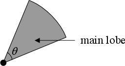
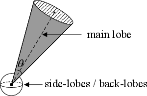
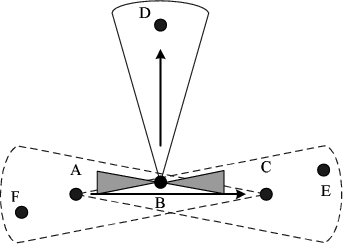
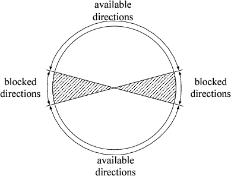
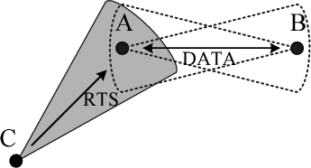
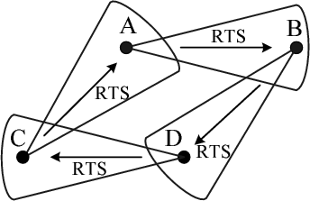
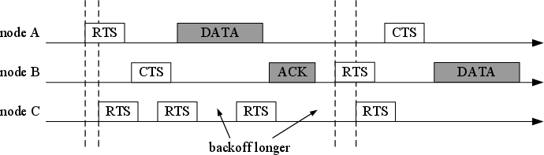

Using Directional Antennas in Wireless Networks: a Survey
Hong-Ning Dai
Faculty of Information Technology
Macau University of Science and Technology
Avenida Wai Long, Taipa, Macau
hndai@ieee.org
*A more completed version of this article can be found in [1].
Abstract
This paper presents a comprehensive literature survey on recent advances and open research issues on DAWNs. Firstly, we briefly introduce the classification of directional antennas, antenna radiation patterns, antenna modes as well as the challenges in the physical layer of DAWNs. Then, we present research issues on the MAC layer, followed by the current solutions as well as open research problems. We also discuss the research issues on the routing layer, the transport layer and the performance evaluation of DAWNs. A brief introduction of indoor DAWNs is given in this paper as well.
Index Terms
Nowadays, wireless networks have numerous emerging applications, ranging from backbone wireless mesh networks, last-mile wireless networks and Wi-Fi direct networks. We can categorize the various application scenarios into two types: (1) indoor wireless networks and (2) outdoor wireless networks. Indoor wireless networks include last-mile wireless networks and Wi-Fi direct networks, which usually have shorter links than outdoor wireless networks. Compared with indoor wireless networks, outdoor wireless networks often serve as the network backbone or the infrastructure for Internet connection and usually have a longer transmission range. Besides, a data transmission usually traverses through multiple hops in outdoor wireless networks while it often takes only one hop in indoor wireless networks.
Both indoor and outdoor wireless networks typically consist of the nodes equipped with omni-directional antennas. Since omni-directional antennas spread radio signals in all directions, all neighbors around a pair of communication nodes (i.e., the transmitter and the receiver) are prevented from transmitting to avoid collisions. Therefore, the capacity of wireless networks using omni-directional antenna is limited due to the high interference and the low spatial reuse. We call such wireless networks using omni-directional antennas as WONs.
Many other studies consider using directional antennas instead of omni-directional antennas in both indoor and outdoor wireless networks. Compared with an omni-directional antenna, a directional antenna can concentrate its transmitting or receiving capabilities to a certain direction. Thus, using directional antennas in wireless networks allows more concurrent transmissions in the vicinity of a pair of communication nodes and consequently leads to less interference to other on-going transmissions. We call such wireless networks using directional antennas as DAWNs, which usually have much higher network capacity than WONs.
DAWNs have more benefits than WONs despite many design challenges that restrict the wide application of directional antennas in wireless networks. Besides, using directional antennas in indoor environments usually leads to more challenges than that in outdoor environments. Thus, the solutions to indoor DAWNs are quite different from those to outdoor DAWNs (research issues on indoor DAWNs will be addressed in Section V-C). In this paper, we mainly concentrate on outdoor DAWNs, but some discussions may apply to indoor DAWNs as well.
There are a number of studies on DAWNs. Most of them are only focused on design and implementation issues of DAWNs. However, there are few studies offering comprehensive overviews on advances and research challenges on different layers in DAWNs. Therefore, we present a survey on DAWNs in this paper. In particular, we (i) summarize the research challenges on different layers of DAWNs; (ii) compare the current solutions and offer implications on DAWNs; (iii) present prospects for the future studies on DAWNs.
More specifically, we categorize the research issues on DAWNs into the following types according to the different network layers.
Although there are some related surveys on DAWNs [2, 3, 4, 5, 6], they are only concentrated on a particular layer of DAWNs. For example, the studies [3, 4, 5, 6] are only focused on the MAC layer but the survey [2] just offers an overview on smart antennas on the physical layer.
The remaining paper is organized as follows. In Section II, we provide a brief overview of various directional antennas, their classification and the challenges of directional antennas in the physical layer. The MAC issues related to DAWNs are presented in Section III. In Section IV, we discuss the research challenges in the routing layer of DAWNs. Section V addresses other research issues on DAWNs. Finally, we conclude the paper in Section VI.
To clarify the concepts of directional antennas, we give a brief introduction of directional antennas as well as a classification of directional antennas in Section II-A. Section II-B and Section II-C present current radiation patterns of directional antennas and antenna modes, respectively. We discuss the benefits of directional antennas in Section II-D and challenges of using directional antennas in wireless networks in Section II-E.
A. Antennas and their classification
The classification of various antennas is shown in Figure 1. In general, an antenna is a device which is used for radiating/collecting electromagnetic energy (radio signals) into/from space. Among various antenna types, omni-directional antennas are commonly used in wireless networks. One hypothetical omni-directional antenna, called isotropic, is a point in space that radiates power in all directions equally. This ideal antenna is often taken as a reference model of practical antennas. A half-wave dipole is a practical omni-directional antenna, which has a circular radiation pattern in the azimuth plane or in the elevation plane. Since an omni-directional antenna radiates radio signals in all directions, only a small percentage of them can reach the desired nodes and most of them are scattered into space. The scattered radio signals can cause interference with nodes within the coverage of the antenna. Besides, omni-directional antennas have low efficiency in the frequency reuse since a number of channels are required to avoid interference.
A directional antenna is an antenna (directed antenna) or an antenna system (an array of antennas), which can radiate or receive radio signals more effectively in some directions than in others. There are two kinds of directional antennas:
A smart antenna consists of not only a number of radiating elements but also a combining/dividing network and a control unit. The control unit that is normally implemented by using a digital signal processor (DSP) is the brain of a smart antenna. Many terms have been used to refer to smart antennas, which include intelligent antennas, phased array, spatial processing, digital beamforming, adaptive antenna systems etc. In this paper, we denote all these antennas as smart antennas.
Smart antennas can be categorized as the following types:
Sectored antennas are also assumed to be used in many studies including [10, 11, 12, 13, 14, 15, 16, 17, 18, 19]. Sectored antenna systems are typically used in cellular networks, where a sectored antenna subdivides the area covered by an omni-directional antenna into sectors. Each sector is regarded as a different cell, which offers a longer range than that of omni-directional antennas. Sectored antennas can select one or multiple sectors to receive or transmit at a time. In general, sectored antennas can be treated as switched beam antennas if only one sector is active at a time. This is true if the sectored antenna has a single interface. In this case, its omni-directional mode and directional mode (details will be addressed in Section II-C) have different transmission ranges, though the reception range is the same. If there is an interface per sector (each antenna), its omni-directional and directional modes have the same transmission range.
B. Radiation Patterns for Directional Antennas
The radiation pattern of an antenna is the two or three-dimensional spatial distribution of antenna gain as a function of the observer’s position along a path or surface of constant radius. A typical antenna radiation pattern in 3-D space is shown in Figure 3. The gain of an antenna is defined as
|
| (1) |
where θ is the angle between the z-axis and the vector r, and ϕ is the angle between the x-axis and the projection of the vector r into the x-y plane. The vector r represents the radiation lobe which is a portion of the radiation pattern bounded by regions of relatively weak radiation intensity [20]. U(θ,ϕ) is the power density in direction (θ,ϕ), Uave is the average power density over all directions and η is the efficiency of the antenna. If the antenna radiates power equally in all directions, then U(θ,ϕ) will be equal to Uave, and the antenna is an omni-directional antenna (isotropic). The angle pair (θ,ϕ) is called the Direction-Of-Arrival (DoA). A single θ or ϕ, called the Angle-of-Arrival (AoA) represents the direction of the received signal. The power gain G(θ,ϕ) of an antenna is the ratio of radiation intensity to average intensity over all directions. In general, a directional antenna has a main lobe (beam) of the peak gain and side-/back-lobes of smaller gains, which account for nothing but interference to other nodes.
Since the radiation pattern of a directional antenna is too complicated to be used in analysis, there are two simplified models for radiation patterns of directional antennas:
| 
(a) Flat-top Model |
| 
(b) Cone+Sphere Model |
|
| (2) |
where θ ≥ θmin and θmin is the minimum achievable beamwidth.
Both the flat-top model and the cone+sphere model have been used in many current studies on outdoor directional systems (as shown in Table IV) although they are too simple to analyze the real impacts of directional antennas on DAWNs. But, not all studies use the less accurate analytical models. Instead, many real directional systems (both indoor and outdoor DAWNs) either make decisions based on measurements, such as DIRC [22, 23], MiDAS (multi-directional-antenna systems) [24], Indoor Switched beams [25], Multi-sector antenna systems [26], WIFI Directional APs [27] or use the realistic antenna radiation models including long-distance mesh networks [28, 29, 30] and UDAAN (utilizing directional antennas for ad hoc networking) [31].
Recently, the realistic antenna radiation models have also been used in many indoor directional systems, such as DIRC [22, 23], MiDAS (multi-directional-antenna systems) [24], Indoor Switched beams [25], Multi-sector antenna systems [26], WIFI Directional APs [27] as well as some outdoor systems such as long-distance mesh networks [28, 29, 30] and UDAAN (utilizing directional antennas for ad hoc networking) [31].
The smaller the beamwidth of an antenna is, the more directional it is (the higher gain it has), since the energy is concentrated into a smaller angle. In practice, the gain is a function of the elevation and azimuth beamwidth, and usually approximated with the following formula [32]:
|
| (3) |
where θHP and ϕHP (in degrees) represent the half-power beamwidth in elevation and azimuth angles respectively, and η denotes the radiation efficiency.
C. Antenna Modes of Directional Antennas
TABLE I
Antenna Modes of Directional Antennas
| RX | |||
| Omni | Dir | ||
| TX | Omni | Omni-Omni (I) | Omni-Dir (II) |
| Dir | Dir-Omni (III) | Dir-Dir (IV) | |
In general, directional antennas have two modes to transmit or receive: the omni-directional (Omni) mode and the directional (Dir) mode. The Omni mode is achieved through turning on all the sectors of switched-beam antennas, adjusting beam pattern of adaptive array antennas or using an omni-directional antenna. The Dir mode is realized by switching on one sector of switched-beam antennas or utilizing analog beamforming or digital beamforming of adaptive array antennas. An antenna in the Dir mode usually has a higher antenna gain than that in the Omni mode. As shown in Table I, there are four combinations for the transmitter (TX) mode and the receiver (RX) mode: (I) both the transmitter and the receiver are in the Omni mode; (II) the transmitter is in the Omni mode and the receiver is in the Dir mode; (III) the transmitter is in the D mode and the receiver is in the Omni mode; (IV) both the transmitter and the receiver are in the Dir mode.
Among the four cases, case I usually applies to WONs. Case II rarely happens since the receiver cannot know the location of the transmitter if it is in the Dir mode. Case III is often assumed in DAWNs since it is easy to solve the localization problem and the neighbor discovery problem (will be addressed in Section III-A.2) when the transmitter is in the Dir mode and the receiver is in the Omni mode. Case IV is the most preferred mode in DAWNs. This is because the maximum transmission antenna gain Gt and the maximum reception antenna gain Gr can be achieved when both the transmitter and the receiver are in the Dir mode. According to Friss’s free space equation [33], the communication range between the transmitter and the receiver can be maximized in this case. Besides, it requires the minimum power to reach the given communication range. In addition, when both the transmitter and the receiver are in the Dir mode, they cause the minimum interference to other nodes. However, scheduling antenna beams to face each other at the same time in Case IV is still a challenge (details about the solutions will be presented in Section III-A.2). Most current studies circumvent the problem by assuming the Omni mode at the receiver(case III).
D. Benefits of Directional Antennas
Compared with omni-directional antennas, directional antennas have the following advantages.
With the benefits brought by directional antennas, DAWNs potentially have the higher capacity and the better routing performance than WONs. In particular, the analysis in [34] shows that a DAWN achieves a network capacity gain of 2π∕ over a WON when both transmission and reception are directional, where α and β denote the transmitter antenna beamwidth and the receiver antenna beamwidth, respectively. Other theoretical studies [35, 36, 37, 38] have further confirmed this result. Besides, experimental studies [10, 11, 21, 52, 53, 31] have also shown that using directional antennas in wireless networks can significantly improve the network throughput. Moreover, the increased transmission range brought by directional antennas leads to fewer hops, which results in the improved routing performance (i.e., shorter delay) of DAWNs than WONs [21, 54, 39, 43].
Although directional antennas have numerous advantages, there are many research challenges in the physical layer, which restrict the application of directional antennas from wireless networks.
To enable beamforming and other capabilities, such as nulling to interference and mitigating multipath signals, a directional antenna must have a powerful processing unit (e.g., DSP unit) and a mighty control unit. It is a challenge to equip wireless ad hoc networks with directional antennas, where many portable devices only have a low-processing capability.
On the other hand, the bulky physical size of directional antennas brings a challenge to deploy directional antennas to wireless networks. In general, the antenna gain heavily depends on the number of antenna elements. Every two elements must be separated by at least a half-wavelength. For example, a 2.4 GHz antenna requires about 8-cm separation between two elements [55]. This inevitably leads to bulky size of directional antennas, which makes more difficult to deploy directional antennas to wireless networks.
However, with the evolution of integrated circuit (IC) and wireless communications, more and more inexpensive, powerful and tiny processing units will be available to the portable devices in wireless networks. For example, a compact Ultra wideband (UWB) antenna with dimensions of (0.9 cm x 1 cm) is used in the breast imaging system [56].
Although the directionality enables directional antennas to concentrate the accepting capability or the sending capability on a direction and weakening the capability on other directions, it also leads to challenges on upper layers, especially for MAC layer.
One of the challenges brought by the directionality of directional antennas is directional carrier sensing (DCS). In a typical carrier sensing multiple access (CSMA) MAC protocol, a transmitter must listen to the medium first before it initiates its transmission in order to avoid collisions with other on-going transmissions. More specially, the transmitter will compare the signal strength measured from the analog circuit with the given SINR threshold. If the signal strength is greater than the threshold, it indicates that the medium is busy; otherwise it indicates the medium is available. Different from omni-directional antennas, which can conduct carrier sensing (CS) easily, DCS is more challenging due to the directionality of of directional antennas as well as different beamforming mechanisms, which heavily depend on antenna types. It is feasible for a switched beam antenna (or a sectored antenna) to conduct DCS since it can determine which sector has the highest signal strength and whether it is greater than the threshold. For an analog beamforming antenna (belonging to adaptive arrays), DCS is also feasible since it can calculate the direction of signal by conducting weighted-sum algorithm at analog circuit. But DCS is not feasible for a digital beamforming antenna since the weighted-sum operation is done at base-band [55].
Another challenge is how to determine the direction of the receiver or the transmitter. In particular, it is involved with two sub-problems: (1) localization and (2) neighbor discovery. The first one is to determine the absolute or reference location of each node in the network. It can be solved by either GPS-based methods or GPS-free methods. The neighbor discovery is to determine where neighbors of a node are. More specifically, when the transmitter begins to transmit, it must know the direction of the receiver; when the receiver begins to receive, it must know the direction of the transmitter. It is easy to solve the neighbor discovery problem when either the transmitter or the receiver is in the Omni mode. But it is challenging for the case that both the transmitter and the receiver are in the Dir mode. Detailed discussions on these problems will be presented in Section III.
III. MAC Issues with Directional Antennas
The unique characteristics of directional antennas make the MAC design in DAWNs more challenging than that in WONs. In Section III-A, we introduce MAC issues on DAWNs. Section III-B and Section III-C present a classification of current MAC protocols and a comparison of the protocols, respectively. In Section III-D, we discuss open research issues in the MAC design on DAWNs.
Impacts of Antenna Types
Most of the MAC protocols for DAWNs are based on either switched beam antennas (sectored antennas) or adaptive array (steerable beam) antennas. The MAC protocols for switched beam antennas, though are not as complicated as those for adaptive array antennas, have to deal with more complex issues than omni-directional antennas. When a node is about to transmit a packet, it must select a sector (beam) first. If the destination is unknown, it may have to transmit the RTS frame on all sectors. Secondly, the idle node is normally monitoring incoming signals on all sectors, and enables one of them only when the direction of signal is determined. This may discount the benefit gained from the sectored antennas as their transmission range may be reduced to the Directional-Omnidirectional (Dir-Omni) range or even the Omnidirectional-Omnidirectional (Omni-Omni) range. Supporting simultaneous transmissions is another challenge for MAC design in DAWNs. The MAC protocols that assume to use switched beam antennas include DMAC [10], Nasipuri’s protocol [11], Circular-DMAC [12], MDA [14], RI-DMAC [15], DBTMA/DA [16], Tone DMAC [17], BT-DMAC [18, 57] and SYN-DMAC [58].
Compared to omni-directional antennas, directional antennas have numerous benefits. In particular, switched beam antennas have higher antenna gains than omni-directional antennas, thus the transmission range is extended. Moreover, since the signals are focused on a desired direction, the interference is mitigated and spatial reuse is also improved. The main drawback of switched beam antennas is that they often have higher cost than omni-directional antennas. The MAC protocols for switched beam antennas, though are not as complicated as those for adaptive array antennas, have to deal with more issues than omni-directional antennas. First, when a node is to transmit a packet, it must select a sector (beam). If the destination is unknown, it may have to transmit RTS on all sectors. Second, the idle node is normally monitoring incoming signals on all sectors, and enables one of them only when the direction of signal is determined. This may discount the benefit gained from the sectored antennas as their transmission range may be reduced to the Directional-Omnidirectional (Dir-Omni) range or even the Omnidirectional-Omnidirectional (O-O) range. Supporting simultaneous transmissions is another challenge for protocol design. The MAC protocols assume to use switched beam antennas include DMAC [10], Nasipuri’s protocol [11], Circular-DMAC [12], MDA [13], [14], RI-DMAC [15], DBTMA/DA [16], Tone DMAC [17], BT-DMAC [18] and SYN-DMAC [19].
Steerable single beam antennas and adaptive array antennas have more advantages than switched beam antennas, e.g., the further reduced interference and the mitigated multipath fading. However, the MAC becomes more difficult due to the directional beamforming. In particular, when a receiver equipped with a steerable beam antenna has no knowledge of the transmitter, it must determine where and when to point to the transmitter. Furthermore, since the antenna beam of the transmitter is pointed to a specific direction when the transmission is in progress, it cannot know the transmissions from other nodes. It results in the new hidden terminal problem and the deafness problem (they also happen in the networks with sectored antennas), which will be described in Section III-A.3. In most cases, a MAC protocol needs to be designed for a specific antenna system although the MAC protocols for directional antennas may share some common properties. The MAC schemes using adaptive array antennas include Directional Virtual Carrier Sensing (DVCS) [52], Multi-hop MAC (MMAC) [53], RTR-SDMA [59], SWAMP [60], Smart-Aloha [61], ROMA [62] and DTRA [63].
Impacts of Radiation Patterns
The radiation patterns of directional antennas have impacts on the network performance. As shown in Section II-B, an antenna pattern typically includes a main lobe and several sidelobes and backlobes, which account for nothing but interference. Generally, there are several approaches dealing with sidelobes and backlobes: (i) simplifying or ignoring side/backlobes, (ii) using the nulling capability of the directional antenna to mitigate the effects of sidelobes and backlobes, (iii) simultaneous transmission or reception to reduce the effects of sidelobes and backlobes.
As mentioned in Section II-B, the flat-top model and the cone+sphere model are used for analyzing radiation patterns of directional antennas. The flat-top model is assumed in many protocols including DMAC [10], Nasipuri’s protocol [11], Circular-DMAC [12], MDA [14], RI-DMAC [15], DBTMA/DA [16], BT-DMAC [18] and SYN-DMAC [58], in which the sidelobes and backlobes are ignored. Other protocols including MMAC [53] and MAC proposed by Ramanathan [21] assume the approximated cone+sphere model. Although the simplified models facilitate the analysis on MAC protocols, they cannot depict the realistic impacts of directional antennas in DAWNs. For example, the sidelobes and backlobes can significantly affect the network throughput [52] [31].
Another technique is the nulling capability of directional antennas, which can reduce the effects of sidelobes. Several proposed protocols have exploited the nulling capability to reduce the interference and maximize the SINR. In [59], a spatial null angle vector is used to modify the radiation pattern by placing nulls in appropriate directions. Singh et al. [61] exploit the nulling capability of directional antennas and achieve significantly performance improvements.
Instead of mitigating sidelobes or backlobes, many researchers propose protocols to reduce the effects of sidelobes and backlobes by directing the sidelobes and backlobes to other directions or circumventing sidelobes and backlobes through synchronizing transmissions or receptions. In particular, Receiver-Oriented Multiple Access (ROMA) protocol [62] steers the sidelobes toward areas without nodes (or the nodes that cannot be reached) by using the spatial adaptability of directional antennas. Raman and Chebrolu [28] propose a 2-Phase (2P) protocol for wireless networks with long-distance links. It is shown in [28] that it is possible to simultaneously activate all outgoing links (transmit) or incoming links (receive) at a node even with presence of sidelobes and back lobes when the power at each link is properly set. This capability of multi-transmit or multi-receive (but not both) is also named as Multi-Transmit-Receive (MTR) capability, which has been investigated in [64]
Impacts of Antenna Modes
As mentioned in Section II-C, there are the Omni mode and the Dir mode for directional antennas. When a directional antenna is in the Dir mode, it concentrates its directionality to a certain direction and consequently leads to the improved signal strength and the increased communication range. The increased communication range by using directional antennas can help reducing the number of hops between the source and the destination. Besides, the increased communication range can also improve the network connectivity by bridging the disjoint network partitions [65] [39]. When a directional antenna is in the Omni mode, it can be regarded as an omni-directional antenna, which has a shorter communication range than that in the Dir mode. Therefore, depending on whether the Dir mode is used at either the transmitter, or the receiver or both, the transmission range varies from Dir-Omni range to Dir-Dir range. When both the transmitter and the receiver are in the Dir mode, the transmission range is maximized. The transmission range is shortened when the Omni mode is used at both the transmitter and the receiver. Since the receiver does not know about any transmission attempts from the transmitter, it has to listen in the Omni mode when it is idle. Therefore, the range extension is often shortened to the Dir-Omni range. MMAC [53], UDAAN-DMAC [31] and DTRA [63]) attempt to extend the communication range to Dir-Dir range. In particular, MMAC [53] delivers multi-hop RTS frames to the receiver over a number of hops so that a communication within the Dir-Dir range is established. DTRA [63] and UDAAN-DMAC [31] propose a synchronized mechanism to schedule the transmitter and the receiver to face each other within Dir-Dir range.
Using directional antennas in DAWNs increases not only the communication range but also the interference range, which is usually proportional to the communication range. The increased interference range leads to more nodes suffering from the interference. Therefore, proper power control with directional antennas is necessary for the MAC design on DAWNs. Takai et al. [66] propose a preliminary power control scheme in DAWNs, in which they use the reception range control instead of the transmission range control. Through this way, the range-extended communication will not interfere with on-going communications. It is also shown in [66] that this mechanism can dramatically improve the packet delivery ratio.
Localization
Localization is to determine the location of a node in the network. Localization of nodes in DAWNs is critical since a node must know the direction of its intended receiver before initiating a transmission. To achieve this, each node should have a reference location in the network.
One kind of the approaches to obtain the location of a node is to use a location determination hardware, e.g., a GPS receiver. Many studies [10, 15, 17, 18, 19, 59] assume that GPS-based localization is used. However, in addition to the economic factors of GPS devices, the self-limitations of GPS devices have restrained the application of GPS devices from wireless networks. Firstly, expensive receivers are needed to be mounted on GPS devices since the received signal strength of GPS is usually quite low. Besides, unobstructed views are required for GPS, which usually cannot work indoors. Moreover, the inquiry of destination position produces additional traffic load [67].
There are other GPS-free methods to estimate the location of a node. These techniques typically use distance or angle measurements from some reference points and apply triangulation to locate the node [68]. The distance or angle estimates may be obtained from: received signal strength (RSSI) measurements, Time-of-arrival (ToA), time-difference-of-arrival (TDoA) measurements and Angle of arrival (AoA) measurements. But non-uniform propagation environments make RSSI methods unreliable. The major drawback of ToA and TDoA measurements is that a small measurement error can cause a large estimation error due to the high propagation speed of wireless signals. ToA and TDoA techniques often need to use a signal with a slower propagation speed, such as ultrasound, and it can give an accurate measurement but requires additional hardware to receive the ultrasound signal. AoA measurement uses directional antennas to estimate the angle of arrival of the received signal from a beacon node. The main limitation for the AoA method is the possibility of error in estimating the directions caused by multipath reflections. The protocols that utilize AoA or DoA schemes include Nasipuri et al. [11], DVCS [52], Circular-DMAC [12], DBTMA/DA [16], Smart-802.11b, Smart-Aloha [61].
Neighbor discovery
Neighbor discovery is another critical issue in DAWNs. After each node obtains its location in the network, it must know the location information of its neighbors before it initiates the transmission. The neighbor discovery in DAWNs is more challenging than that in WONs since it is hard to determine where to point, and when to point the antenna for transmission or reception [31]. Furthermore, it is extremely difficult for blind TR-BF (transmit and receive beamforming) discovery since two nodes in the Dir mode can find each other only if they are adjusting their antenna beams toward each other at the same time.
We divide the issues on neighbor discovery into two types: the informed discovery and the non-informed discovery (blind discovery) as shown in Table II. There are several solutions to the informed discovery and the non-informed discovery. In the informed discovery, a node can get location information of other neighbors by AoA caching [52], location table maintenance [12], the gossip-based algorithm [70] and RTS multi-hop routing [53]. In particular, as shown in [52], each node caches the estimated AoAs from neighboring nodes when it hears any signal, regardless of whether the signal is intended for the node. The cache will be updated or invalidated if the neighboring nodes are moving away or dead. The drawbacks of this method include the low effectiveness of capturing neighbor information and refreshing caches too frequently due to the mobility of nodes. The study [12] uses the location table to store the neighbors directions through overhearing RTS or CTS frames. This method is similar to AoA caching and has the same limitation as AoA caching. Vasudevan et al. [70] propose a gossip-based algorithm in which nodes can discover their one-hop neighbors through scattering the location information based on a certain probability. The simulation results show that the gossip-based algorithm is much faster than directed-discovery schemes including AoA caching and location table maintenance although this algorithm only works in static networks. The schemes such as AoA caching, location table maintenance and gossip-based algorithm only consider neighbor discovery under the Omni-Omni mode or the Dir-Omni mode.
RTS multi-hop routing [53] is applicable to neighbor discovery under the Dir-Dir mode. MMAC [53] is used to forward position information with RTS/CTS control frames. Through this way, a Dir-Dir link can be established (see Section III-B.1 for more details).
The non-informed discovery (blind discovery) is far more challenging than the informed discovery. In the blind discovery, a node can only choose the Dir mode to transmit and receive. Therefore, it is hard to let nodes to know each other without pre-negotiation in advance. In particular, a blind discovery mechanism in terms of synchronized transmit and receive beamforming (TR-BF) is proposed in [31]. As shown in Figure 5, at a pre-reserved time, each node alternates randomly between sending heartbeats in one direction and listening to such heartbeats in the opposite direction. In each round, this method can help a number of pairs find each other, e.g., pairs (A, B), (C, E), (D, F) and (G, I), as shown in Figure 5. All the nodes can obtain the locations of their neighbors within the limited rounds of location information exchange. Similar scanning algorithms [69] and [63] are proposed to address the neighbor discovery. However, the existing schemes assume strict synchronization on each node, which may require a common clock source usually obtained from a GPS receiver. It is challenging to obtain strict synchronization in distributed wireless networks. Besides, synchronized TR-BF works well in static networks. However, it will take more rounds for nodes to find each other when nodes are moving. Thus, to design a blind neighbor discovery scheme without synchronization in mobile environments is still an open issue.
The radio signal from a node significantly decays due to path loss and fading effects [33]. In the case of omni-directional antennas, only those nodes within the transmission radius of the transmitter can detect the carrier on the channel. This location-dependent carrier sensing results in the hidden terminal problem and the exposed terminal problem [71]. In particular, the nodes outside the transmission range of the transmitter but inside the reception range of the receiver will interfere with the receiver, which are called the hidden nodes. On the other hand, the nodes within the range of both the transmitter and the receiver are called the exposed nodes, which suffer from suppression of the transmission between the transmitter and the receiver. Due to the directionality of directional antennas and the directional transmission/reception regions (different from omni-directional antennas), the new location-dependent carrier sensing problems arise in DAWNs. More specifically, those problems include the new hidden terminal problem, the exposed terminal problem, the deafness problem, the deaf zone problem and the head-of-line blocking problem, which will be depicted in details as follows.
The hidden terminal problem
A hidden terminal is a node that is not aware of another on-going transmission and whose transmission (including RTS/CTS/ACK control frames and data frames) can cause collisions with the on-going transmission. There are two kinds of new hidden terminal problems due to the directionality of directional antennas: (i) the hidden terminal problem due to the asymmetry in antenna gains; (ii) the hidden terminal problem due to the unhearing of RTS/CTS frames.
The first kind of hidden terminal problem originates from the asymmetry in antenna gains. As shown in Figure 6, there are 4 idle nodes: A, B, C and D in the Omni mode with antenna gain Go. Firstly, node B sends a Directional RTS (DRTS) to node C and node C replies with a Directional CTS (DCTS). Assume that node A is still in idle mode and far enough away from node C, node A may not hear the DCTS from C since the omni-directional gain Go is smaller than the directional gain Gd. Then nodes B and C begin data transmission by pointing their transmission and reception beams to each other with a gain Gd. While the transmission between B and C is in progress, node A has data destined for node D. Node A points its directional beam toward node D to sense the channel and detects the channel in idle. Therefore, it sends a DRTS to node D. Since node C is receiving in the Dir mode with a gain Gd, it is quite possible that the DRTS from node A interferes with the transmission from node C. Node A becomes the hidden terminal to node B and node C. In other words, a transmitter in the Dir mode (with Gd) and a receiver in the Omni mode (with Go) may be out of each other’s range, but they may reach each other if they both transmit and receive directionally (with Gd). This kind of hidden terminal problem arises due to different gains with the Omni mode and the Dir mode of directional antennas.
Another hidden terminal problem arises due to unhearing of RTS/CTS frames. In the scenario shown in Figure 7, when node A is transmitting with node D, node B sends a RTS frame to node C. At this time, node C’s DCTS can reach node A. However, node A cannot hear it since A is beamformed in the direction of node D. When the communication between node B and node C is in progress, assume that node A has finished the transmission to node D and has a packet to send to node B. Node A’s DNAV (Directional Network Allocate Vector) indicates that the channel toward node B is free when node B is sending data frames to node C. Therefore, node A begins to send a RTS frame to node B, and it will lead to a collision with node B’s transmission. This kind of hidden terminal problems will not happen with omni-directional antennas since node B will be aware of the transmission of node A and defer the transmission with node C.
The exposed terminal problem
The exposed terminal problem in DAWNs is a problem in which two transmissions are not allowed to proceed simultaneously, i.e., one transmission is suppressed by another one. even though they will not collide with each other. Directional antennas may cause more nodes exposed to interference due to the increased transmission range. Take Figure 8 (a) as an example. Nodes E, F and B become the exposed terminals to nodes A and C when they are within the coverage of nodes A and C. The exposed terminal problem leads to fewer concurrent transmissions and lower spatial reuse. In particular, as shown in Figure 8, node B is blocked from communicating with node D by the transmission between nodes A and C while the communication between nodes B and D will not interfere with that one between nodes A and C. The phenomenon becomes noticeable when the transmission range is further increased and more nodes are covered by the antenna beams. However, using DNAV (directional Network allocation Vector) [52] [53] [60] [72] can alleviate the impact of the exposed terminal problem. Consider Figure 8 (a) as an example again, where node B’s DNAV records the directions of nodes A and C as the forbidden directions. But the direction toward node D is still available and B can transmit with D. More specifically, the directions (the regions with dashed lines) of node B as shown in Figure 8 (b) are blocked from transmission while the white directions are still available. Similarly, nodes E and F are available to other directions except for those toward nodes C and A, respectively.
The DNAV mechanism can reduce the impacts of the exposed terminal problem and improve the spatial reuse. As a result, the network throughput is significantly improved [53] [52] [12] [18].
| 
(a) The exposed node B |
| 
(b) DNAV for node B |
The deafness problem
The deafness problem, first addressed in [53], arises due to directional beamforming. In particular, the deafness is caused when a transmitter fails to communicate to its intended receiver when the intended receiver is beamformed toward a direction away from the transmitter. As an example, consider Figure 9. Node C has data frames destined for node B and it will choose to use the route through node A. When A obtains a data frame from C, it beamforms toward B and forwards the frame to node B. At this time, C is unaware of the transmission between A and B since it cannot receive the directional RTS frame from node A. If it initiates the next transmission with a RTS frame to A, C will not receive the CTS reply from A since A is beamformed to B. According to the current schemes based on back-off mechanism of IEEE 802.11 distributed coordination function (DCF) [73], node C retransmits the RTS when A does not respond. This process will go on until the RTS retransmitting limit has been reached. This excessive control frame retransmission will cause the waste on the network capacity. Since C would increase its back-off interval on each attempt (as shown in Figure 9(c)), the deafness problem may result in unfairness as well.
| 
(a) Deafness |
| 
(b) The deafness can cause a deadlock |
| 
(c) Deafness leads to unfairness |
Furthermore, the deafness can also lead to a deadlock in the network. As shown in Figure 9 (b), node A is beamforming toward node B and sending a RTS request. However, the antenna beam of node B is pointed to node D since node B is also sending a RTS request. Similarly, node C is also beamforming toward node A and the antenna of node D is adjusted toward node C. Since each node is deaf to each other, a deadlock is caused.
The deaf zone problem
The deaf zone problem (first discovered in [74]) can be regarded as an extended case of the deafness problem. Essentially, the deaf zone problem arises due to the omni-directional reception of RTS frames when a node is in idle mode. Take Figure 10 as an example, while node A is communicating with node B, node C located between A and B becomes deaf to other nodes, e.g., node D. This is because node C can only receive RTS in omni-directional mode while RTS sent from A or B has blocked C from receiving other RTS frames.
The head-of-line blocking (HOLB) problem
The HOLB problem arises due to the first-in-first-out (FIFO) manner in wireless networks. In particular, the HOLB problem happens when the transmission direction of the foremost data packet in a node’s transmission queue is blocked due to the DNAV blocking or the deafness problem. However, other data packets in the queue should not be blocked as their transmission directions may not be blocked. Take Figure 11 as an example, in which there are four nodes A, B, C and D equipped with directional antennas. There are three packets queued at node C. Two of them are destined for node B and one is destined for node D. Since the packets destined for B must be routed through A, A begins transmission with B after beamforming toward B. In this case, node A becomes deaf to node C. Thus, all the packets destined for node B from node C have to be blocked due to the deafness of node A. However, since the direction of node C to node D is not blocked, node C should not block the packet destined for node D and should transmit it instead.
Several protocols have been proposed, attempting to tackle the hidden terminal, the deafness problem [12] [17] [14] [75] [15] [58] [18] [74].
Circular-DMAC [12] attempts to address both the hidden terminal problem and the deafness problem by sending sequential directional RTS frames through each antenna beam before transmitting data frames, as shown in Figure 12. In this way, the deafness problem can be solved. Consider the example as shown in Figure 9. Node C is notified by RTS frames from node A and therefore it will not transmit RTS toward node A. In addition, the hidden terminal problem due to the asymmetry in antenna gains may be partially solved since some nodes outside the range of Directional CTS may be reached by Directional RTS. However, this protocol may not mitigate all the hidden nodes due to the asymmetry in antenna gains since the Dir-Dir range may be much greater than the Dir-Omni range. Besides, Circular-DMAC cannot solve the hidden terminal problem due to the unhearing of RTS/CTS frames. For example, as shown in Figure 7, node A cannot hear either RTS frames from node B and CTS frames from C since its antenna is pointed toward node D. Another drawback of Circular-DMAC is the significant extra overhead caused by transmitting multiple RTS frames for each data frame. As shown in [12], under low traffic load, Circular-DMAC performs poorer than IEEE 802.11.
Gossain et al. [14] propose an improved MAC protocol (MDA) based on Circular-DMAC. Although the deafness region is mitigated by sweeping multiple RTS and CTS frames in opposite directions, the deafness problem can not be solved completely. Besides, MDA also requires sending multiple RTS and CTS frames before each data transmission, which brings additional overhead.
Other protocols including ToneDMAC [17] and BT-DMAC [18] explore using tones to solve the hidden terminal and the deafness problem with low overhead on the performance. In [17], Choudhury et al. propose a tone-based notification mechanism which allows the neighbors of a node to distinguish congestion from deafness and react appropriately. For example, as shown in Figure 13, when the communication of node A and node B is done, they will send busy tones omni-directionally. Now, node C that has received the busy tone from node A deduces that the deafness is the reason for no-reply CTS from A. It will choose a shorter back-off timer to contend the channel, as shown in Figure 13(b). BT-DMAC [18] offers a better solution to both the hidden terminal problem and the deafness problem by sending busy tones through the whole communication process. It has low overhead although an additional omni-directional antenna is required to send busy tones.
RI-DMAC [15] explores a polling scheme initiated by the receiver to address the deafness problem. Although this MAC scheme performs better than both Circular-DMAC [12] and Tone DMAC [17], it cannot solve the deafness problem completely. Besides, RI-DMAC does nothing to the hidden terminal problem. SYN-DMAC [58] attempts to attack both the deafness problem and the hidden terminal problem. But SYN-DMAC requires strict time synchronization among all nodes, which is a challenge in wireless ad hoc networks.
Directional MAC with Deafness Avoidance (DMAC-DA) [74] is proposed to address both the hidden terminal problem, the deafness problem and the deaf zone problem. Multiple RTS or CTS frames are used before a data communication in order to avoid the possible collisions. In addition to DNAV (used to avoid collisions), a deaf neighbors table (DNT) is proposed to mitigate the deafness. However, DMAC-DA also shares some common drawbacks of Circular DMAC and MDA, i.e., transmitting multiple RTS/CTS frames for each data transmission. Besides, maintaining additional DNT at each node also increases the complexity of MAC design.
The HOLB problem severely affects the network performance of DAWNs. Several studies have addressed the HOLB problem [76, 77, 78, 79]. In particular, a new directional MAC scheme [76] based on the greedy priority scheduling is proposed. This MAC protocol establishes an interlinking queue (IQ) and a MAC queue with different packet priorities. In this protocol, the packet with the least wait time is always scheduled first. Simulation results show this protocol can significantly improve the network performance in terms of the throughput and the end-to-end delay. However, this protocol requires making significant modifications on MAC since it requires maintaining multiple queues in MAC layer. Angular MAC (ANMAC) [77] has solved the HOLB problem by using a location based scheduler. In particular, packets are enqueued in a queue, if the packet at the head of the queue is destined for to a busy node, the scheduler will schedule the next packet for transmission. Similar to [76], ANMAC requires make some modifications on MAC. Besides, ANMAC also requires transmitting multiple control frames (e.g., AN-RTS, AN-CTS) for a single data transmission, which may lead to additional overheads. Selectively Directional MAC (SDMAC) [78] offers a similar solution to ANMAC by scheduling the packets in the queue. OPP (opportunistic) MAC [79] uses a similar mechanism to ANMAC by modifying the FIFO queue as a link list so that the scheduler can directly schedule the next un-blocked packet to transmit. However, most of current solutions just modify the queue scheduling mechanisms at MAC to avoid the blocked packets in the queue. Other scheduling schemes are expected in the future studies.
B. Classification of MAC Protocols Using Directional Antennas
As shown in Figure 14, we categorize the current MAC protocols with directional antennas as two main categories: the random access protocols and the reservation/scheduling protocols. According to different collision avoidance approaches, we further classify random access based protocols into: (1) RTS/CTS based protocols and (2) tone-based protocols.
RTS/CTS based protocols
There are a number of protocols based on DCF of IEEE 802.11, which typically uses RTS/CTS control frames to prevent interference. Except for replacing omni-directional RTS/CTS frames with directional ones, directional MAC protocols have new features, including AoA caching [52], DNAV [52] [53], beam locking [52], etc.
In particular, DVCS is proposed to exploit the capabilities of directional antenna systems [52]. A realistic directional antenna model is adopted in this scheme. DVCS have three primary features: AOA caching, beam locking and unlocking, and DNAV. Although AOA caching offers an effective neighbor discovery scheme, the mobility can result in frequent cache invalidation of AOA.
The beam locking and unlocking mechanism has been used to maximize the received power and reduce signal distraction. As shown in Figure 15, node A has data frames to node B. It obtains B’s direction from its AoA cache, which is stored from the last successful communication with node B. Then, it adjusts its beam toward node B and sends a RTS. Node B listens to the signals from A, then adjusts its antenna pattern to A with the maximum gain and sends a CTS back to A with the updated AoA information. Node A adjusts its antenna to the updated direction of B and locks the beam toward node B until the data transmission is completed. The beam locking and unlocking mechanism perform well in a static environment. But it may not be applicable to a high-speed environment since it takes time to build the locked beams of antennas (see Section III-D.2).
DNAV is a directional version of the Network Allocation Vector (NAV) in IEEE 802.11, which reserves the channel for others only in a range of directions. DNAV can increase spatial reuse, e.g., mitigating the exposed terminal problem. The experimental results show three to four times capacity improvement with DVCS over omni-directional transmissions.
MMAC [53] builds on the Basic DMAC protocol proposed in [10]. In MMAC, each node is equipped with two separate antennas: an omni-directional antenna and a steerable single beam antenna. Therefore, there are the Omni mode and the Dir mode for each node. Since the gain of directional antennas is greater than that of omni-directional antennas, directional antennas acquire a longer transmission range than omni-directional antennas. When both the transmitter and the receiver are in the Dir mode, the maximum communication range is achieved. However, it is very difficult to let both the transmitter and the receiver face each other when both of them are in the Dir mode. The difficulty lies in negotiating with the transmitter and the receiver and making an appointment on when and where to point the antenna toward each other.
To solve this non-informed discovery, the synchronized TR-BF scheme is proposed while it requires strict time synchronization in the whole network, which is extremely difficult in wireless ad hoc networks. MMAC solves this problem in an alternate way without synchronization. MMAC establishes the Dir-Dir link between the transmitter and the receiver by forwarding multi-hop RTS frames to the receiver through multiple Dir-Omni links. In particular, as shown in Figure 16, the Dir-Dir link consisting of node A and node B cannot be directly reached since they do not know each other at first. Node A initiates a routing request (a Directional RTS frame) toward node B through the established route through node C and node D, where links A-C, C-D and D-B are the Dir-Omni links. The DRTS frame is attached with the channel reservation information including the direction of node A and the time when node A wants to establish the link. When the DRTS frame is finally received by node B, node B will adjust its antenna toward node A at the time as they have negotiated before. Therefore, through the multiple RTS forwarding, a Dir-Dir link is established. In spite of the range extension to the Dir-Dir range, the multi-hop RTS scheme requires more complex upper layer support (such as link characterization and proactive routing). Moreover, forwarding multiple RTS frames causes additional overhead on the performance.
There are many other DCF-based MAC protocols [10] [11] [12] [14] [59] [21] [80] [81] [82] [60] proposed to improve the performance of DAWNs. Among them, Circular DMAC [12] and MDA [14] are proposed to solve the hidden terminal problem and the deafness problem.
Tone-based MAC protocols with directional antennas
In addition to the directional transmission of RTS/CTS control frames and data frames, transmitting tones omni-directionally or directionally can avoid collisions and solve both the hidden terminal problem and the deafness problem. Both ToneDMAC [17] and BT-DMAC [18] are based on sending tones to avoid collisions. In particular, ToneDMAC transmits an out-of-band tone through the same antenna after the transmission is over. This mechanism can decrease the probability of the transmission failure and increase the channel utilization. However, it cannot reduce the cost due to retransmitting RTS frames since a node will not inform its neighbors until the transmission is completed. In BT-DMAC, when the transmission is in progress, both the sender and the receiver will turn on their omni-directional busy tones to protect the on-going transmission. By combining with DNAV, the scheme almost mitigates the hidden and the deafness problems completely. However, an additional omni-directional antenna is required.
Other tone-based protocols include smart-802.11b and smart-Aloha [61], which exploit the nulling and DoA capabilities of the antenna and obtain an better performance than WONs. Different from ToneDMAC and BT-DMAC, the tones of smart-802.11b and smart-Aloha are sent directionally, which are mainly used for the hand-shaking between the transmitter and the receiver.
Tones have many benefits, such as lower performance overhead than RTS/CTS control frames. However, unlike RTS/CTS, tones can only include limited information, which consequently lead to more potential collisions. Besides, the tones can interference with each other since they are within the same channel. Therefore, the discriminating mechanisms or correcting schemes on tones should be further investigated in the future.
Comparisons of Random Access Schemes
Table III compares the control message features of directional MAC protocols based on random access mechanisms (RTS/CTS based and tone-based protocols). Note that we just list the representative protocols in this table due to space limitation. It does not mean other non-included protocols are less important. In this table, TX and RX represent the transmitter and the receiver of frames or tones, and Omni and Dir represent the omni-directional mode and the directional mode, respectively. The usage of other control frames is also indicated in the table.
Among the RTS/CTS based protocols, the control frames are sent directionally or omni-directionally, but the RTS frames must be received only in the Omni mode as the receiver does not know the exact location of the transmitter. Therefore, the transmission range is bounded by the Dir-Omni range. After exchanging the RTS/CTS messages, the transmitter and the receiver have known each other, and consequently the data frames and ACK frames are sent directionally.
TABLE III
Comparisons of Random Access MAC protocols Using Directional Antennas
| Protocols | RTS | CTS | DATA | ACK | Sender Tone/Other frames | Receiver Tone | ||||||
| TX | RX | TX | RX | TX | RX | TX | RX | TX | RX | TX | RX | |
| DMAC scheme 1/2 [10] | Dir/Omni | Omni | Omni | Omni | Dir | Omni | Dir | Omni | N/A | N/A | N/A | N/A |
| Nasipuri et al. [11] | Omni | Omni | Omni | Omni | Dir | Dir | Dir | Dir | N/A | N/A | N/A | N/A |
| DVCS [52] | Dir/Omni | Omni | Dir | Dir | Dir | Dir | Dir | Dir | N/A | N/A | N/A | N/A |
| MMAC [53] | Dir | Omni | Dir | Dir | Dir | Dir | Dir | Dir | N/A | N/A | N/A | N/A |
| Circular-DMAC [12] | Dir | Omni | Dir | Omni | Dir | Dir | Dir | Dir | N/A | N/A | N/A | N/A |
| RTR-SDMA [59] | Dir | Omni | Dir | Omni | Dir | Dir | Dir | Dir | Omni (RTR) | Omni (RTR) | N/A | N/A |
| SWAMP [60] | Dir | Omni | Dir | Omni | Dir | Dir | Dir | Dir | Omni (SOF) | Omni (SOF) | N/A | N/A |
| MDA [14] | Dir | Omni | Dir | Omni | Dir | Dir | Dir | Dir | N/A | N/A | N/A | N/A |
| DMAC-DA [74] | Dir | Omni | Dir | Omni | Dir | Dir | Dir | Dir | N/A | N/A | N/A | N/A |
| RI-DMAC [15] | Dir | Omni | Dir | Omni | Dir | Dir | Dir | Dir | Dir (RTR) | Dir (RTR) | N/A | N/A |
| DBTMA/DA [16] | Omni | Omni | Dir | Omni | Dir | Dir | Dir | Dir | Dir/Omni | Dir/Omni | Dir/Omni | Dir/Omni |
| ToneDMAC [17] | Dir | Omni | Dir | Omni | Dir | Dir | Dir | Dir | Omni | Omni | N/A | N/A |
| Smart-802.11b [61] | N/A | N/A | N/A | N/A | Dir | Dir | Dir | Dir | Dir | Omni | Dir | Omni |
| Smart-aloha [61] | N/A | N/A | N/A | N/A | Dir | Dir | Dir | Dir | Dir | Omni | N/A | N/A |
| BT-DMAC [18] | Dir | Omni | Dir | Dir | Dir | Dir | Dir | Dir | Omni | Omni | Omni | Omni |
| TX: Transmission | RX: Reception |
| Dir: Directional mode | Omni: Omni-directional mode |
The complicated collision avoidance mechanisms (RTS/CTS or tones) are required to avoid collisions for random access control protocols while other MAC protocols can also avoid collisions through reserving the channel or TDMA scheduling schemes.
Receiver-oriented multiple access (ROMA) [62] assumes to use multi-beam adaptive array (MBAA), which can form multiple beams for several simultaneous receptions or transmissions, and consequently increase the spatial reuse. By exchanging control frames such as RTS/CTS before each transmission, ROMA determines the communication pair and pre-arranges a set of timetables for individual nodes. Each pair of nodes is scheduled with the predetermined time slots, thus the transmissions are almost collision-free. Another benefit of ROMA is that both transmitters and receivers are allowed to use the Dir mode, which leads to a longer transmission range and a higher spatial reuse over the Dir-Omni mode. The hidden terminal problems are also solved in this protocol.
Zhang [63] proposes a directional transmission and reception algorithm (DTRA) in wireless ad hoc networks. Each node is assumed to be equipped with a steerable antenna. In DTRA, time is divided into frames and each frame is split into 3 sub-frames: one sub-frame is used for neighbor discovery and 3-way handshaking, another one is devoted to reconfirming connection and reserving data frames, and the final sub-frame is used for the actual data transmission. One of DTRA’s key features is the scanning algorithm for neighbors discovery, which is quite similar to synchronized TR-BF [31]. It is shown in [63] that DTRA requires at most ⌈log2N⌉ scans for any two nodes to find each other (if they can reach each other), where N is the maximum number of nodes in the network. During the neighbor discovery process, transmitters and receivers can exchange messages for possible transmission in the next step by a 3-way handshaking algorithm. Reservation confirmation is quite like the 3-way handshaking process in neighbor discovery except for the different messages contents.
A directional MAC protocol based on the time synchronization mechanism, called SYN-DMAC is proposed in [58] to tackle the deafness problems and the hidden terminal problem. SYN-DMAC also divides a transmission cycle into three phases: random access phase, data phase and ACK phase. Random access phase serves as channel reservation and route discovery (including neighbor discovery). During the channel reservation, an improved shaking-hand mechanism based on RTS-CTS-CRTS is proposed while a new control frame CRTS (Confirmed RTS) is used. After the random access phase, multiple collision-free data transmissions proceed in parallel. Similar to data transmission phase, parallel ACK transmissions are also contention-free. In SYN-DMAC, nodes have a shorter vulnerable time to the deafness and the hidden terminals. However, the hidden terminal and the deafness problem cannot be solved completely during the random access phase.
A new MAC protocol, called 2P, is proposed for 802.11 mesh networks with long-distance links, though this scheme can potentially be used in multi-hop networks [28]. Each node in this network is equipped with a parabolic grid directional antenna (i.e., a kind of the traditional directed antennas) and multiple transmissions are allowed in each node. Sidelobes of the antenna are considered in the protocol. When sidelobes exist, the experiments verify that it is still possible to transmit along all links of a node simultaneously (SynTx) or receive along all links of a node simultaneously (SynRx), under appropriate power settings. The 2P MAC protocol operates by switching each node between the two phases, i.e., SynRx and SynTx. When switching from SynRx to SynTx, the node’s neighbors have to switch from SynTx to SynRx, and vice versa. This protocol is implemented in firmware and involves very little modifications to the 802.11 chipset, thus it has low cost. The carrier-sense based backoff and ACK are turned off to enable the SynTx/SynRx. The simulation results show that 2P can perform several times better than CSMA/CA in a long-distance 802.11 mesh network.
Compared with the random access schemes, the reservation/scheduling MAC protocols are more promising in DAWNs since these protocols offer almost collision-free solutions. The challenge with the reservation/scheduling MAC protocols lies in designing the complexed synchronization schemes in distributed wireless networks.
C. Comparison of MAC protocols in DAWNs
It is difficult to compare numerous MAC protocols in DAWNs since they have different features. In this paper, we try to summarize the common features of the different MAC protocols and give a comparison in Table IV. Similar to Table III, we just list the representative schemes in this table.
TABLE IV
Comparisons of MAC Protocols Using Directional Antennas
| Radiation | Side- | Nulling | Location-dependent carrier sense | ||||||
| Antenna Types | Patterns | lobes | Capability | Hidden | Deafness | Neighbor Discovery | Mobility | Evaluation | |
| Terminal | |||||||||
| DMAC [10] | switched beam | flat-top | no | no | n/a | n/a | given | n/a | NS-2 |
| Nasipuri et al. [11] | switched beam | flat-top | no | no | n/a | n/a | given | low | Simulator |
| DVCS [52] | steerable | realistic | yes | no | n/a | n/a | AoA caching | low | QualNet |
| single beam | |||||||||
| MMAC [53] | steerable | cone+sphere | yes | no | proposed but | proposed but | RTS Multi-hop routing | n/a | QualNet |
| single beam | still unsolved | still unsolved | |||||||
| Circular-DMAC [12] | switched beam | flat-top | no | no | solved | solved | location table | n/a | Simulator |
| RTR-SDMA [59] | multiple beam | flat-top | no | yes | n/a | n/a | given | n/a | Simulator |
| adaptive array | based on PARSEC | ||||||||
| SWAMP [60] | adaptive array | realistic | no | no | n/a | solved | Multi-hop routing | n/a | Testbed |
| (ESPAR [83]) | |||||||||
| MDA [14] | switched beam | flat-top | no | no | solved | solved | location table | n/a | NS-2 |
| DMAC-DA [74] | switched beam | flat-top | no | no | solved | solved | location table | n/a | NS-2 |
| UDAAN-DMAC [31] | adaptive array | realistic | yes | n/a | n/a | n/a | synchronized TR-BF | low | OPNET & Testbed |
| RI-DMAC [15] | switched beam | flat-top | no | no | n/a | solved | given | n/a | Simulator |
| DBTMA/DA [16] | switched beam | flat-top | no | no | solved | n/a | given | n/a | QualNet |
| ToneDMAC [17] | switched beam | realistic | yes | no | n/a | solved | given | n/a | QualNet |
| Smart-802.11b [61] | steerable | realistic | yes | yes | not combat | n/a | given | n/a | OPNET |
| single beam | hidden terminal | ||||||||
| Smart-Aloha [61] | steerable | realistic | yes | yes | not combat | n/a | given | n/a | OPNET |
| single beam | hidden terminal | ||||||||
| BT-DMAC [18] | switched beam | flat-top | no | n/a | solved | solved | location table | n/a | GloMoSim |
| ROMA [62] | multiple beam | ideal | no | yes | solved | n/a | location table | low | Simulator |
| adaptive array | |||||||||
| DTRA [63] | steerable | ideal | no | n/a | n/a | n/a | scanning algorithm | low | QualNet |
| single beam | |||||||||
| SYN-DMAC [58] | switched beam | flat-top | no | n/a | solved | solved | given | n/a | Simulator |
| 2P [28] | parabolic grid | realistic | yes | n/a | n/a | n/a | given | n/a | NS-2 & Testbed |
As shown in Table IV, we compare the MAC protocols according to physical features (such as antenna types and radiation patterns), MAC issues (such as the hidden terminal problem and the deafness problem), mobility and evaluation.
In particular, most protocols assume either switched beam antennas or adaptive array antennas are used in DAWNs. Table IV also indicates that many protocols use the simplified antenna models, such as the flat-top model for analytical purpose although these models are too ideal to depict real impacts of directional antennas. Besides, many protocols have been proposed to address both the hidden terminal problem and the deafness problem since they were first found in [53]. However, as mentioned before, the location-dependent carrier sensing problems have still not been well solved (the solutions are either too complicated or have significant performance overheads). Blind neighbor discovery is another challenging issue. The solutions to this problem are either the beam scanning algorithms based on strict time synchronization [31] [63] or the multi-hop RTS routing scheme [53].
In addition to the above issues, the mobility has also been considered in several protocols including Nasipuri’s protocol [11], DVCS [52], ROMA [62], DTRA [63] and UDAAN-DMAC [31]. However, most of the schemes protocols only work in the low-speed environments. The future MAC protocols are expected to work in the high-speed environments.
Most of the MAC protocols in DAWNs are evaluated either by simulations or realistic experiments. In particular, DVCS [52], MMAC [53], DBTMA/DA [16], ToneDMAC [17] and DTRA [63] adopt QualNet to evaluate their performance. Singh et al. [61] conduct their simulations on OPNET. BT-DMAC [18] is implemented on GloMoSim with the extension of directional antennas. DMAC [10] and MDA [14] are evaluated on NS-2. 2P [28] is evaluated on extends NS-2 (Extended Network Simulator package) and on a testbed. Nasipuri et al. [11], Circular-DMAC [12], RI-DMAC [15], ROMA [62] and SYN-DMAC [58] are evaluated by self-developed simulators. SWAMP [60] is implemented on a realistic testbed. Discussions on the performance evaluation of DAWNs are presented in Section V-B.
D. Open Research Problems of MAC Design in DAWNs
Although various MAC protocols are proposed to address the research challenges on MAC design in DAWNs, there are a number of open research issues need to address in the future.
Many of the current studies (including most of current outdoor systems and some indoor systems [22] [23] [26]) have a common assumption that the nodes are densely distributed and the traffic is also in saturation (i.e., each node always has packets to send). In these dense networks, the collision probability of packets is quite high and many complicated schemes are proposed to mitigate the collisions (i.e., the hidden terminal problem and the deafness problem). Therefore, directional antennas are used to increase the spatial reuse in dense networks.
On the other hand, some studies are focused on sparse networks, e.g., long-distance wireless networks in rural areas [28] [29] [30] and many commercial networks [84] [85] [86] [87] [24]. In sparse networks, directional antennas are mainly used to increase the signal strength or extend the communication range. For example, the long-distance wireless networks [28] [29] [30] can extend the transmission range from less than 400 meters to more than 20 kilometers.
The collision probability in sparse networks is much lower than that in dense networks. In that case, the removal of the bulky DCF mechanisms might bring more benefits since the DCF mechanism contributes nothing but overheads when the collisions are very low. In particular, the preliminary results in [28] and [30] have shown that the usage of RTC/CTS frames and the unnecessary backoff mechanism brings significant overheads on the network throughput.
More studies on design MAC protocols in sparse networks are expected in the future.
In addition to the above MAC issues, the mobility should be taken into account in the future as well. In general, the mobility with directional antennas is mainly involved with vehicular communications. In particular, vehicular communications can be categorized into two types: (i) Vehicle-to-Infrastructure (V2I) and (ii) Vehicle-to-Vehicle (V2V). Some previous studies [88] [89] have addressed the directional communication on V2I. However, to the best of our knowledge, there are few studies on the directional communication on V2V.
One of the challenges on V2V is how to maintain the directional antennas functioning under the high-speed environments. The current approaches, such as the beam locking/unlocking scheme and the AoA caching mechanism [52] may not work well in the high-speed directional V2V communications. One of the limitations of the beam locking/unlocking mechanism is that it is hard to lock the beams when nodes are moving in a high speed [52]. Besides, the beam locking/unlocking scheme may not be applicable to the complex network topologies, e.g., a node is making a turn. Consider Figure 17 as an example. Suppose nodes A and B have locked their antenna beams while they are moving in a highway. When node A makes a right turn (A’ in Figure 17) and node B is still moving forward (B’ in Figure 17), both nodes A and B must unlock their beams and adjust their beams to the new directions. It is very difficult to achieve this in very short time. Moreover, AoA caching scheme also suffers from the frequent invalidation of caches due to the mobility of nodes. Similarly, the location table based approach may become less effective in mobile environments as well. Furthermore, the mobility also brings challenges to blind discovery, e.g., it takes more runs for the beam-scanning algorithm to help nodes find each other when nodes are moving.
Most of current MAC protocols only consider using single channel in DAWNs. However, the collisions significantly arise with the increased number of nodes since all the nodes are sharing the same channel. Using multiple channels may help to avoid collisions. For example, many tone-based protocols including [18] [16] use one data channel for data transmissions and one control channel for sending busy tones to notify other nodes to avoid collisions.
However, there are few studies on using multiple channels for data transmissions in DAWNs. Both theoretical and experimental results [36] [90] show that using multiple data channels in DAWNs has much more benefits than using a single channel. One of the reasons is that using multiple data channels can reduce collisions by separating conflict transmissions on different channels. Besides, using multiple data channels can support more simultaneous transmissions and consequently increase the network throughput.
But there are a number of research challenges with using multiple channels in DAWNs: (1) how to assign channels for each pair of nodes to ensure the collision-free transmission? (2) how to assign the channels dynamically (e.g., when new nodes join the network)?
To solve problem (1), we may refer to the algorithms based on the conflict graph [91], which are mainly used to solve the collision-free scheduling problem in WONs. It is necessary to investigate whether these algorithms still work on DAWNs. Problem (2) is more challenging than problem (1) since dynamical assignments of channels require tighter negotiation of nodes than static channel assignments. More studies are expected to solve the above issues.
IV. Challenges on Directional Routing
The routing in wireless ad hoc networks is more challenging than that in wired networks or wireless networks with infrastructure (e.g., wireless LAN) since nodes in decentralized networks have no knowledge about the network topology and therefore they have to establish the routing paths in ad hoc manner. Most of current ad hoc routing protocols are mainly focused on WONs. Some current studies on DAWNs directly borrow routing protocols in WONs since they treat the routing layer of DAWNs as transparent. In fact, the routing in DAWNs is much different from WONs in the following aspects: (1) sweeping delay of directional antennas, (2) directional neighbor discovery and (3) impacts of location-dependent carrier sensing problems. Such differences imply that ad hoc routing protocols in WONs may not be appropriate for DAWNs. In Section IV-A, we introduce the impacts of directional antennas on ad hoc routing. Section IV-B presents a brief survey on the current routing protocols with directional antennas. We discuss the open research issues on ad hoc directional routing in Section IV-C.
A. Impacts of directional antennas on ad hoc routing
As mentioned in Section III, directional antennas have unique characteristics, which make the MAC design in DAWNs more challenging than that in WONs. These unique features of directional antennas also bring impacts on the routing design in wireless ad hoc networks.
Most of current ad hoc routing protocols in WONs require that nodes flood the network with the request messages by broadcasting. But to emulate omni-directional broadcasting with directional antennas requires that a node sweeps its antenna beams in all directions and sequentially transmits multiple requests to its neighbors, which leads to much higher delay than omni-directional antennas. Consider Figure 12 as an example, where a node is equipped with an antenna with 8 beams. To broadcast route request packets in all directions, a node needs to sequentially transmit the same packet over its 8 beams, as shown in Figure 12 (a). Therefore, the delay caused by sweeping the beams sequentially is almost 8 times higher than the delay of omni-directional antennas1 .
Moreover, the sweeping delay is increased with the increased number of beams. In general, the narrower the antenna beam is, the longer the antenna can reach and the less interference it can cause. However, the narrower beam antenna also means that it has the more number of beams, which leads to higher sweeping delay than the wider beam antenna. Therefore, sweeping delay seems to counteract the benefits of narrow-beam antennas more or less. The sweeping delay of directional antennas have to be considered in the design of ad hoc routing protocols in DAWNs in the future.
Neighbor discovery is a necessity for ad hoc routing since the formation of the network topology requires building neighbor links. Meanwhile, neighbor discovery in DAWNs is more challenging than that in WONs due the directionality of directional antennas. As mentioned in Section II-C, there are three types of links in DAWNs: (1) Omni-Omni link; (2) Dir-Omni link; (3) Dir-Dir link. Among them, Omni-Omni links and Dir-Omni links are easy to be established since the receiver in the Omni mode can easily obtain the direction of the transmitter through estimating AoA. However, to establish Dir-Dir links is extremely challenging since it requires both the transmitter and the receive to direct their antennas to the right directions at the right time. There are several schemes [31] [63] [69] proposed to address the Dir-Dir neighbor discovery. But most of them require the strict time synchronization, which is quite difficult in ad hoc networks. Extensive studies are expected to address the Dir-Dir neighbor discovery without synchronization.
On the other hand, Dir-Omni links and Dir-Dir links can extend the transmission range and consequently lead to fewer hops than WONs which have Omni-Omni links only. Take Figure 18 as an example. If a RREQ (routing request) packet is sent omni-directionally from node A through B to node C, the route through A-B-C has a hop count 2. If directional antennas are considered, then the RREQ packet is sent directionally from node A. It is quite possible that node A can directly reach node C since a directional antenna has a higher gain than an omni-directional antenna. Therefore, a short route A-C is established, which has a hop count 1. Using directional antennas in ad hoc routing can consequently reduce the routing delay due to the multi-hop routing. It is proved theoretically in [43] that DAWNs have smaller routing delay than WONs. However, more efforts are expected to verify the routing improvement of DAWNs over WONs through practical experiments.
Besides, directional routing may offer a better solution to Dir-Dir discovery than synchronized TR-BF [31] scheme. In particular, consider Figure 16 (in Section III-B.1) as an example. MMAC establishes the Dir-Dir link through the multi-hop RTS forwarding mechanism. Of course this scheme is suffering from transmitting excessive packets for a single Dir-Dir link.
As mentioned earlier in Section III-A.3, the hidden terminal problem and the deafness problem of MAC layer can significantly affect the performance of DAWNs. We show as follows that the hidden terminal problem and the deafness problem can also severely affect the routing performance.
The hidden terminal problem can severely affect the routing performance. As shown in Figure 19, there is a routing path A-B-C-D. Node A and node B can communicate with each other through a Dir-Omni link since they are within the Dir-Omni range of each other. Similarly, nodes B and C form a Dir-Omni link and nodes C and D form a Dir-Omni link. Note that in this scenario, nodes A and D can reach other through a Dir-Dir link although they are outside of the Dir-Omni range of each other (as we have discussed in Section III-A.3). Thus, node A is the hidden node to node D due to the asymmetry in antenna gains. Suppose node A has data packets to node D: DATA(1) and DATA(2) as shown in Figure 19. DATA(1) has been transmitted earlier than the packet DATA(2) since link B-C cannot be active at the same time as link A-B and link C-D while link A-B and link C-D can be active simultaneously. It is quite possible that the transmission of DATA(2) from node A will collide with the reception of DATA(1) at node D. This is because node A is the hidden node to node D when link A-B and link C-D are simultaneously active. To avoid the collisions, DATA(2) should be deferred at least after DATA(1) is successfully received at node D. The hidden terminal consequently leads to the degradation on the routing performance. But it is not the case when using omni-directional antennas since node A and node D are not hidden terminals to each other.
In addition, the deafness problem has impacts on the routing performance of DAWNs as well. Consider Figure 20 as an example, where nodes C and D choose a common routing path A-B to node B. Assume both C and D have data packets destined at node B. Suppose node C initiates its transmission first and A will help forwarding C’ packet. When A is on transmission to B, node D also initiates its transmission to node A. At that time, node D is unaware of the transmission between A and B since it does not hear the communication of A and B. Thus, node D sends a RTS frame to node A, which consequently leads to the deafness problem. Due to the unfairness of the deafness problem (as shown in Figure 9), it is quite possible that node D could never obtain the channel if node C always has packets to send. However, this will not happen when omni-directional antennas are used (node D will be aware of the transmission of nodes A and B).
Both the hidden terminal problem and the deafness problem can severely affect the routing performance of DAWNs, which need to be considered for routing layer design on DAWNs.
B. Directional routing protocols
Compared with extensive studies on MAC layer of DAWNs, there are a smaller number of routing protocols dedicated to directional antennas. Most of current routing protocols of DAWNs just simply adapt omni-directional routing protocols to DAWNs. However, omni-directional routing protocols may not work well in DAWNs since directional antennas have different characteristics from omni-directional antennas. For example, it is shown in [53] that the network throughput significantly degrades due to the deafness when the routes have not been properly designed.
There are several new routing protocols proposed for DAWNs. In particular, we categorized directional routing protocols into three types: pro-active, re-active and hybrid (which combine both pro-active and re-active mechanisms), as shown in Table V.
DLSRP (directional link-state routing protocol) [92] is a pro-active (table-driven) routing protocol, in which each node must maintain a complete routing table of the entire network. Dir-LSRP [21] is another version of directional link-state routing protocol, which has the similar performance of DLSRP. ESPAR-routing [65] is an improved DLSRP with load balancing. One of disadvantages of these table-driven routing protocols is the cost for maintaining the routing table at each node, which requires sending excessive node-updating messages. Besides, this type of protocols has a slower reaction on network failures.
ORDA (On-demand Routing using Directional Antennas) [93] is one of the early studies on re-active directional routing. In particular, ORDA constraints the route request to a certain narrow angle to avoid flooding extensive messages. ARC-AODV [66] is a directional AODV (Ad Hoc On Demand Vector) protocol with adaptive range control. DAODV [97] is another version of directional AODV. In both ARC-AODV and DAODV, route requests (RREQs) are broadcast and flooded in the entire network when the route between the source and the destination is still unknown. Then, the route is set up when route replies (RREPs) are relayed back from the destination to the source.
Directional Dynamic Source Routing (DDSR) [94] is also an on-demand routing protocol. When a node has data packets to send and the routing path to the destination is unknown, it will initiate routing discovery by flooding route request packets to its neighbors. Then each node that receives an RREQ packet will re-broadcast the RREQ until it reaches the destination. The main drawback of DDSR is that the sweeping delay due to directional broadcasting may lead to sub-optimality of routing paths. This is because to sweep antenna beams leads to the neighbors of a node to get the same RREQ at different points of time (i.e., the shortest delay does not means the shortest path). Besides, DDSR also suffers from flooding excessive packets to maintain the network when there are many broken links at intermediate nodes (due to the deafness).
Li et al. propose an improved DDSR (Multi-path Directional DSR) [95]. This protocol shares the same routing discovery and maintenance scheme with DDSR while the routing table records multiple routing paths instead of a single routing path. When a link is broken, the node can choose another link to route. However, MDDSR also requires excessive messages to keep the network connected. DRP (Directional Routing Protocol) [96] is also a directional routing protocol based on Dynamic Source Routing (DSR). But DRP has a better performance than DDSR since it has an enhanced routing discovery mechanism.
All the on-demand routing protocols are suffering from the high latency in routing finding and the overhead due to excessive flooding routing messages.
In addition to pro-active routing protocols and re-active routing protocols, there are some hybrid routing protocols for DAWNs. In particular, Ramanathan et al. [31] propose a directional hazy sighted link-state (DHSLS) [98] [99] routing protocol of WONs to DAWNs. DHSLS is made scale well to a large scale network (around 1000 nodes). More specifically, DHSLS establishes routing paths effectively while using the relatively small number of messages to maintain the network connected. In order to achieve this, DHSLS limits the propagation of updating link states through carefully setting the dissemination radius of messages. However, DHSLS does not consider the sweeping delay and the impacts of the hidden terminal problem and the deafness problem.
In addition to the impacts of directional antennas on routing in DAWNs (e.g., sweeping delay, neighbor discovery and the hidden terminal problem and the deafness problem), there are other open issues on the routing layer of DAWNs.
Most of current directional routing protocols are based on existing ad hoc routing protocols, such as DSR and AODV, which are mainly designed for omni-directional antennas. Since directional antennas have distinct broadcasting features from omni-directional antennas (i.e., directional antennas have higher sweeping delay than omni-directional antennas and directional antennas bring the new hidden terminals and the deafness problem), the typical flooding mechanisms required by DSR and AODV may not perform well in DAWNs. Besides, some practical studies, such as Roofnet [100] have shown that some ad hoc routing protocols (e.g., DSR like protocols) fail in practice due to the failure of neighboring nodes. To the best of our knowledge, there are quite few studies on practical directional routing protocols (in fact, we have only found DHSLS works in real test-beds). Moreover, most of current directional routing protocols are evaluated by simulations and not by real experiments. Therefore, it is a big challenge to design routing protocols dedicated to directional antennas in practice.
One of major concerns with directional antennas is the mobility. When nodes in DAWNs are moving, the network topology becomes unstable due to the frequent neighbor re-discovery and routing updates. The current solutions may not apply to the mobile environments since they have significant overheads to maintain the routes. For example, DDSR requires excessive messages to keep the network connected. Besides, nodes need to conduct neighbor discovery frequently due the mobility of the network while the current neighbor discovery schemes are inefficient. For example, AoA caching is quite slow to response to the unstable network. Synchronized TR-BF requires many rounds of beam-scanning algorithms for neighbor discovery. MMAC requires sending excessive control packets to establish a Dir-Dir link. Therefore, more effective routing protocols adaptive to mobile environments are expected in the future.
It is shown in studies [36] [38] [90] that using multiple channels and multiple interfaces in DAWNs can further improve the network capacity. However, routing protocols need to be re-designed for such networks. The first reason is that there are multiple routing paths available at each node equipped with multiple interfaces. It might be un-necessary to consider the sweeping delay of antenna beams since the multiple antennas at a node can be simultaneously active. The new challenges with the multi-channel and multi-interface networks lie in the channel assignment scheme with directional antennas. Secondly, the hidden terminal problem and the deafness problem might be completely solved through using multiple channels. Therefore, the broken path due to the deafness or the hidden terminal might be bridged and consequently more routing paths become available. In addition to the current criteria/metrics (e.g., the minimum end-to-end delay and the reliability of the routing path), other metrics, such as the minimum number of channels or the minimum power consumption should also be considered in the design of routing protocols.
In this section, we address other issues related to DAWNs. In particular, we discuss the problems in the transport layer of DAWNs in Section V-A. Section V-B presents the issues related to the performance evaluation of DAWNs. We introduce some indoor wireless networks using directional antennas in Section V-C.
Transport Control Protocol (TCP) have been widely used in the transport layer of either wired networks or wireless networks. The main purpose of designing TCP is to provide a reliable, infrastructure-independent transport control protocol with end-to-end flow control as well as congestion control mechanisms over the network layer. In particular, TCP should be un-aware whether Internet Protocol (IP) is running over wired connections or wireless connections [101].
TCP performs well in wired networks with incorporating congestion control mechanisms as well as flow control scheme. However, TCP does not perform well in practical wireless ad hoc networks mainly due to the following reasons: (i) mis-interpretation of packet losses, (ii) broken routing path, (iii) the contention of wireless channel, and (iv) the unfairness. In particular, in wired networks, the packet losses are mainly due to the congestion. However, in wireless networks, many reasons can lead to the packet losses. For example, a wireless link often has a much higher BER (bit-error-rate) than a wired link. Besides, the collisions due to the wireless hidden terminal problem also result in the packet losses. Moreover, the wireless routing path is less reliable than a wired one due to the mobility of wireless nodes, the fading wireless channel and the high interference of wireless links. These facts affect both WONs and DAWNs.
There are extensive studies on TCP enhancements over WONs, including Feedback-TCP [102], TCP with explicit link failure notification (TCP-ELFN) [103], TCP with buffering and sequence information (TCP-BuS) [104], and Ad hoc TCP (ATCP) [105] et al. However, to the best of our knowledge, there are quite few studies on transport layer control on DAWNs. In fact, to design a transport control protocol in DAWNs is more challenging than that in WONs. As discussed in Section IV-A, using directional antennas in wireless ad hoc networks will bring challenges on routing, such as the sweeping delay, the new hidden terminal problem and the deafness problem. All these impacts should also be considered in the transport layer design in the future.
There are also some analytical models proposed to evaluate the performance of DAWNs. For example, Wang and Garcia-Luna-Aceves [106] propose a performance model to evaluate the performance of directional MAC protocols which are based on IEEE 802.11 DCF. In particular, a Markov chain model is used to represent the status of a node, in which a node is always in Wait, Succeed or Fail (i.e., a heavy traffic assumption). Besides, this model also approximates the performance of the protocol in the time-slotted mode as that in the asynchronous mode so that the analysis can be simplified. Carvalho and Garcia-Luna-Aceves [107] present a general evaluation model of DAWNs, in which a realistic antenna model and various carrier-sensing mechanisms including DVCS are taken into account.
As mentioned in Section III-C, most of current DAWNs are evaluated by simulations and only few of them are evaluated by real experiments on test-beds. Compared with WONs that are supported by many simulators, there are relatively fewer simulators that can support directional antennas.
Table VI presents a brief comparison of current simulators that can support directional antennas (either build-in support or 3rd party support). Note that we just compare the latest version of simulators, e.g., NS-2 (2.34) [108]2 , QualNet 5.0 [110] and OPNET Modeler 15.0 [111].
Compared with commercial simulators (e.g., QualNet, OPNET Modeler and EstiNet), NS-2 and GloMoSim do not offer the build-in support for directional antennas although some 3rd party versions (e.g., the enhanced network simulator (TENS) [109]) can support directional antennas. Besides, although most of these simulators offer IEEE 802.11 MAC with DCF, only QualNet can support directional MAC protocol, i.e., DVCS. In addition, all these simulators do not support directional routing protocols (e.g., ARC-AODV [66] and DDSR [94]). Moreover, the mobility of nodes is considered in all these simulators.
One of major challenges in the studies on DAWNs is to compare various directional protocols on a common simulation platform. This is because (A) there are quite few source codes available for directional MAC protocols; (B) open source simulators are often complex and time-consuming for learning while commercial ones are quite expensive; (C) the simulation results are not always consistent (mainly due to the continuous changes of simulator source codes).
TABLE VI
Comparisons of Simulators with Directional Antennas
| NS-2 [108] | GloMoSim [112] | QualNet [110] | OPNET Modeler [111] | EstiNet [113] | |
| License | Open source | Open source | Commercial | Commercial | Commercial |
| Directional | 3rd party [109] | 3rd party [18] [106] | Build-in | Build-in | Build-in |
| Antennas | support | support | |||
| MAC layer | 802.11 DCF | 802.11 DCF | 802.11 DCF | 802.11 DCF | 802.11 DCF |
| and DVCS [52] | |||||
| Routing | No Dir | No Dir | No Dir | No Dir | No Dir |
| Transport | TCP/UDP | TCP/UDP | TCP/UDP | TCP/UDP | TCP/UDP |
| Mobility | Yes | Yes | Yes | Yes | Yes |
It is also challenging to evaluate the performance of DAWNs by conducting realistic experiments on test-beds (few directional test-beds available. The exemplary DAWNs include UDANN (utilizing directional antennas for ad hoc networking) [31], DAWN-ESPAR (Electronically Steerable Passive Array Radiator) [60] [83], long-distance wireless mesh networks [28, 29, 30].
The future studies on DAWNs are expected to solve the following issues: (i) a common simulator supporting typical directional MAC protocols, (ii) simulations with the routing layer and the transport layer dedicated for directional antennas, (iii) realistic experiments on test-beds.
C. Indoor wireless networks using directional antennas
So far, our discussions are mainly focused on outdoor directional systems, which are quite different from the indoor directional systems that we are going to discuss in this section.
We briefly survey the current studies on indoor directional systems [25, 26, 22, 23, 27, 24] and compare the design challenges of indoor systems with those of outdoor systems as follows.
Table VII compares several typical indoor directional systems including DIRC [22], Speed [23] and MiDAS [24]. Note that there are other studies [25, 26, 27] focused on measurements of using directional antennas in indoor environments while there is no system design proposed in these studies. Thus, we do not list the measurements studies in Table VII. In particular, TX and RX denote the transmitter and the receiver, respectively. Dir and Omni represent the directional mode and the omni-directional mode, respectively.
DIRC [22] identifies the challenges in using directional antennas in indoor environments and proposes a system to solve these challenges. In particular, DIRC optimizes the orientations of directional antennas with low computational overhead. More specifically, a TDMA-based MAC protocol is proposed in DIRC and is proved to be more efficient than other CSMA/CA-based MAC protocols. However, a drawback of DIRC is the centralized control mechanism, which limits the scalability of DIRC. Besides, clients in DIRC are only equipped with omni-directional antennas, which have higher interference than directional ones.
MiDAS [24] studies the miniaturization of directional antennas at small mobile devices, such as smart-phones. A passive patch directional antenna [114] is used in MiDAS. This antenna without RF chain is so small that it can be mounted at small mobile devices. In particular, MiDAS studies the impacts of the rotation of mobile devices equipped with miniature antennas and the behaviour of directional antennas in NLOS indoor environments. Besides, a heuristic algorithm is proposed to address the antenna selection problem.
It is found in Speed [23] that there are significant network capacity improvements when both APs and clients are equipped with directional antennas. Besides, it is also shown in Speed [23] that a four-sector antenna with 35 ∘ for each one can provide 96% coverage. Since to design a distributed antenna-orientation scheme is more challenging than a centralized one (e.g., in DIRC), a greedy algorithm is proposed to incorporate with a reservation-based MAC protocol. Experimental results show that Speed performs much better than the omni-directional systems (both APs and clients are mounted with omni-directional antennas only) and just a little worse than the centralized scheme.
In most of current indoor directional systems, routing is not addressed since the traffic is traversed through only one hop. However, ad hoc multi-hop routing in indoor directional systems may be worthwhile to study in the future since the traffic will take more than one hop to route in some emerging applications.
Using directional antennas in wireless networks can bring numerous benefits, such as the reduced interference, the extended communication range and the improved network capacity. However, the self-limitations of directional antennas restrict the wide applications of them from wireless networks. In this paper, we present a classification of research challenges on different protocol layers in DAWNs. In particular, the following research issues are expected to be addressed in the future studies.
With the effective solutions to the open issues above, DAWNs should be evolved in excellence.
Acknowledgments
We gratefully acknowledge the support from Macao Science and Technology Development Fund under Grant No. 036/2011/A, Grant No. 081/2012/A3 and Grant No. 096/2013/A3. The authors would like to thank Gordon G.-D. Han and the anonymous reviewers for their excellent comments that greatly improved the quality of the paper.
[1] H.-N. Dai, K.-W. Ng, M. Li, and M.-Y. Wu, “An overview of using directional antennas in wireless networks,” International Journal of Communication Systems (Wiley), vol. 26, no. 4, pp. 413 – 448, 2013.
[2] P. H. Lehne and M. Pettersen, “An overview of smart antenna technology for mobile communications systems,” IEEE Communications Surveys, vol. 2, no. 4, pp. 2–13, Fourth Quarter 1999.
[3] K. W. Schmidt, “A Survey on Recent Approaches to Using Directional Antennas in Mobile Ad Hoc Networks,” 2003. [Online]. Available: http://medianet.kent.edu/surveys/IAD03F-ken/index.html
[4] C. B. Robert Vilzmann, “A survey on MAC protocols for ad hoc networks with directional antennas,” in Proceedings of EUNICE Open European Summer School, 2005.
[5] H.-N. Dai, K.-W. Ng, and M.-Y. Wu, “An Overview of MAC Protocols with Directional Antennas in Wireless ad hoc Networks,” in Proceedings of International Conference on Wireless and Mobile Communications (ICWMC), 2006.
[6] P. Kiran, “A survey on mobility support by mac protocols using directional antennas for wireless ad hoc networks,” in International Symposium on Ad Hoc and Ubiquitous Computing (ISAUHC), 2006.
[7] D. P. Palomar, J. M. Cioffi, and M. A. Lagunas, “Joint Tx-Rx beamforming design for multicarrier MIMO channels: a unified framework for convex optimization,” IEEE Trans. Signal Processing, vol. 51, pp. 2381–2401, 2003.
[8] T. Yoo, S. Member, and A. Goldsmith, “On the optimality of multiantenna broadcast scheduling using zero-forcing beamforming,” IEEE J. Select. Areas Commun, vol. 24, pp. 528–541, 2006.
[9] E. Aryafar, N. Anand, T. Salonidis, and E. W. Knightly, “Design and experimental evaluation of multi-user beamforming in wireless LANs,” in ACM MobiCom, 2010.
[10] Y. B. Ko, V. Shankarkumar, and N. H. Vaidya, “Medium access control protocols using directional antennas in ad hoc networks,” in Proceedings of IEEE INFOCOM, 2000.
[11] A. Nasipuri, S. Ye, and R. E. Hiromoto, “A MAC protocol for mobile ad hoc networks using directional antennas,” in Proceedings of IEEE WCNC, 2000.
[12] T. Korakis, G. Jakllari, and L. Tassiulas, “A MAC protocol for full exploitation of directional antennas in ad-hoc wireless networks,” in Proceedings of ACM MobiHoc, 2003.
[13] H. Gossain, C. Cordeiro, , and D. P. Agrawal, “MDA: An Efficient Directional MAC scheme for Wireless Ad Hoc Networks,” in Proceedings of IEEE Globecom, 2005.
[14] H. Gossain, C. Cordeiro, and D. P. Agrawal, “Minimizing the effect of deafness and hidden terminal problem in wireless ad hoc networks using directional antennas,” Wireless Communications and Mobile Computing, vol. 6, pp. 917–931, 2006.
[15] M. Takata, M. Bandai, and T. Watanabe, “A Receiver-Initiated Directional MAC Protocol for Handling Deafness in Ad Hoc Networks,” in Proceedings of IEEE ICC, 2006.
[16] Z. Huang, C.-C. Shen, C. Srisathapornphat, and C. Jaikaeo, “A busy-tone based directional MAC protocol for ad hoc networks,” in Proceedings of Military Communication Conference (MILCOM), 2002.
[17] R. R. Choudhury and N. H. Vaidya, “Deafness: a MAC problem in ad hoc networks when using directional antennas,” in Proceedings of IEEE ICNP, 2004.
[18] H.-N. Dai, K.-W. Ng, and M.-Y. Wu, “A Busy-Tone based MAC Scheme for Wireless Ad Hoc Networks using Directional Antennas,” in Proceedings of IEEE GLOBECOM, 2007.
[19] J. Wang, Y. Fang, and D. Wu, “SYN-DMAC: A directional MAC protocol for ad hoc networks with synchronization,” in Proceedings of IEEE Military Communication Conference (MILCOM), 2005.
[20] C. A. Balanis, Antenna Theory : Analysis and Design, 2nd ed. New York: John Wiley & Sons, 1997.
[21] R. Ramanathan, “On the performance of ad hoc networks with beamforming antennas,” in Proceedings of ACM MobiHoc, 2001.
[22] X. Liu, A. Sheth, M. Kaminsky, K. Papagiannaki, S. Seshan, and P. Steenkiste, “DIRC: Increasing Indoor Wireless Capacity Using Directional Antennas,” in Proceedings of ACM SIGCOMM, 2009.
[23] ——, “Pushing the envelope of indoor wireless spatial reuse using directional access points and clients,” in Proceedings of ACM MobiCom, 2010.
[24] A. A. Sani, L. Zhong, and A. Sabharwal, “Directional antenna diversity for mobile devices: Characterizations and solutions,” in ACM MobiCom, 2010.
[25] M. Blanco, R. Kokku, K. Ramach, S. Rangarajan, and K. Sundaresan, “On the effectiveness of switched beam antennas in indoor environments,” in Proceedings of International Conference on Passive and Active Network Measurement (PAM), 2008.
[26] H. Lundgren, A. P. Subramanian, T. Salonidis, M. Carrera, and P. LeGuyadec, “Multi-sector antenna performance in dense wireless networks,” in Proceedings of ACM MobiHoc, 2009.
[27] S. Lakshmanan, K. Sundaresan, S. Rangarajan, and R. Sivakumar, “The Myth of Spatial Reuse with Directional Antennas in Indoor Wireless Networks,” in Proceedings of International Conference on Passive and Active Network Measurement (PAM), 2010.
[28] B. Raman and K. Chebrolu, “Design and evaluation of a new MAC protocol for long-distance 802.11 mesh networks,” in Proceedings of ACM MobiCom, 2005.
[29] R. Patra, S. Nedevschi, S. Surana, A. Sheth, L. Subramanian, and E. Brewer, “WiLDNet: Design and Implementation of High Performance WiFi Based Long Distance Networks,” in Proceedings of USENIX NSDI, 2007.
[30] S. Nedevschi, R. K. Patra, S. Surana, S. Ratnasamy, L. Subramanian, and E. A. Brewer, “An Adaptive, High Performance MAC for Long-distance Multihop Wireless Networks,” in Proceedings of ACM MobiCom, 2008.
[31] R. Ramanathan, J. Redi, C. Santivanez, D. Wiggins, and S. Polit, “Ad hoc networking with directional antennas: A complete system solution,” IEEE Journal on Selected Areas in Communications, vol. 23, no. 3, pp. 496 – 506, 2005.
[32] S. R. Saunders, Antennas and propagation for wireless communication systems. Chichester, New York: John Wiley and Sons, 1999.
[33] T. S. Rappaport, Wireless communications : principles and practice, 2nd ed. Upper Saddle River, N.J.: Prentice Hall PTR, 2002.
[34] S. Yi, Y. Pei, and S. Kalyanaraman, “On the capacity improvement of ad hoc wireless networks using directional antennas,” in Proceedings of ACM MobiHoc, 2003.
[35] A. Spyropoulos and C. Raghavendra, “Capacity bounds for ad-hoc networks using directional antennas,” in IEEE ICC, 2003.
[36] H.-N. Dai, K.-W. Ng, R. C.-W. Wong, and M.-Y. Wu, “On the Capacity of Multi-Channel Wireless Networks Using Directional Antennas,” in Proceedings of IEEE INFOCOM, 2008.
[37] J. Zhang and S. C. Liew, “Capacity improvement of wireless ad hoc networks with directional antennae,” Mobile Computing and Communications Review, vol. 10, pp. 17 – 19, 2006.
[38] J. Zhang and X. Jia, “Capacity analysis of wireless mesh networks with omni or directional antennas,” in IEEE INFOCOM (mini-conference), 2009.
[39] C. Bettstetter, C. Hartmann, and C. Moser, “How does randomized beamforming improve the connectivity of ad hoc networks,” in Proceedings of IEEE ICC, 2005.
[40] X. Zhou, S. Durrani, and H. Jones, “Connectivity Analysis of Wirelss Ad Hoc Networks with Beamforming,” IEEE Transactions on Vehicular Technology, vol. 58, no. 9, pp. 5247 – 5257, 2009.
[41] H. Xu, H.-N. Dai, and Q. Zhao, “On the connectivity of wireless networks with multiple directional antennas,” in the 18th IEEE International Conference on Networks (ICON), 2012.
[42] Q. Wang, H.-N. Dai, and Q. Zhao, “Connectivity of Wireless Ad Hoc Networks: Impacts of Antenna Models,” in Proceedings of the 14th International Conference on Parallel and Distributed Computing, Applications and Technologies, Taipei, Taiwan, 2013.
[43] H.-N. Dai, “Throughput and delay in wireless sensor networks using directional antennas,” in Proceedings of the Fifth International Conference on Intelligent Sensors, Sensor Networks and Information Processing (ISSNIP), 2009.
[44] H.-N. Dai and Q. Zhao, “On the Delay Reduction of Wireless Ad Hoc Networks with Directional Antennas,” EURASIP Journal on Wireless Communications and Networking, 2015.
[45] X. Lu, F. Wicker, P. Lio, and D. Towsley, “Security Estimation Model with Directional Antennas,” in Proceedings of MILCOM, 2008.
[46] H.-N. Dai, D. Li, and R. C.-W. Wong, “Exploring security improvement of wireless networks with directional antennas,” in Proceedings of the 36th IEEE Conference on Local Computer Networks (LCN), 2011.
[47] Q. Wang, H.-N. Dai, and Q. Zhao, “Eavesdropping Security in Wireless Ad Hoc Networks with Directional Antenna,” in Proceedings of the 22nd Wireless and Optical Communications Conference (WOCC), 2013.
[48] H.-N. Dai, Q. Wang, D. Li, and R. C.-W. Wong, “On eavesdropping attacks in wireless sensor networks with directional antennas,” International Journal of Distributed Sensor Networks, vol. 2013, 2013.
[49] X. Li, H.-N. Dai, Q. Zhao, and Q. Wang, “Eavesdropping Attacks in Wireless Ad Hoc Networks under a Shadow Fading Environment,” in Proceedings of the 2014 International Conference on Internet of Vehicles (IOV 2014), Beijing, China, 2014.
[50] X. Li, H.-N. Dai, and Q. Zhao, “An Analytical Model on Eavesdropping Attacks in Wireless Networks,” in Proceedings of the IEEE International Conference on Communication Systems (ICCS), Macau SAR, 2014.
[51] X. Li, J. Xu, H.-N. Dai, Q. Zhao, C. F. Cheang, and Q. Wang, “On Modeling Eavesdropping Attacks in Wireless Networks,” Journal of Computational Science, 2014.
[52] M. Takai, J. Martin, R. Bagrodia, and A. Ren, “Directional virtual carrier sensing for directional antennas in mobile ad hoc networks,” in Proceedings of ACM MobiHoc, 2002.
[53] R. R. Choudhury, X. Yang, N. H. Vaidya, and R. Ramanathan, “Using directional antennas for medium access control in ad hoc networks,” in Proceedings of ACM MobiCom, 2002.
[54] A. K. Saha and David, “Routing improvements using directional antennas in mobile ad hoc networks,” in Proceedings of IEEE GLOBECOM, 2004.
[55] G. Li, L. L. Yang, W. S. Conner, and B. Sadeghi, “Opportunities and challenges in mesh networks using directional anntenas,” in the First IEEE Workshop on Wireless Mesh Networks (WiMesh), 2005.
[56] A. Abbosh and M. Bialkowski, “Compact directional antenna for ultra wideband microwave imaging systems,” in IEEE Antennas and Propagation Society International Symposium (APSURSI), 2009.
[57] H.-N. Dai, K.-W. Ng, and M.-Y. Wu, “On busy-tone based MAC protocol for wireless networks with directional antennas,” Wireless Personal Communications, vol. 73, no. 3, pp. 611 – 636, 2013.
[58] J. Wang, H. Zhai, P. Li, Y. Fang, and D. Wu, “Directional medium access control for ad hoc networks,” ACM Wireless Networks (WINET), vol. 15, pp. 1059–1073, 2008.
[59] D. Lal, R. Toshniwal, R. Radhakrishnan, D. P. Agrawal, and J. Caffery, “A novel MAC layer protocol for space division multiple access in wireless ad hoc networks,” in Proceedings of IEEE ICCCN, 2002.
[60] M. Takata, K. Nagashima, and T. Watanabe, “A dual access mode mac protocol for ad hoc networks using smart antennas,” in Proceedings of IEEE ICC, 2004.
[61] H. Singh and S. Singh, “Smart-802.11b MAC protocol for use with smart antennas,” in Proceedings of IEEE ICC, 2004.
[62] L. Bao and J. Garcia-Luna-Aceves, “Transmission scheduling in ad hoc networks with directional antennas,” in Proceedings of ACM MobiCom, 2002.
[63] Z. Zhang, “DTRA: Directional Transmission and Reception Algorithms in WLANs with Directional Antennas for QoS Support,” IEEE Network, vol. May/June, pp. 27–32, 2005.
[64] H.-N. Dai, S. C. Liew, and L. Fu, “Link scheduling in multi-transmit-receive wireless networks,” in Proceedings of the 36th IEEE Conference on Local Computer Networks (LCN), 2011.
[65] S. Roy, D. Saha, S. Bandyopadhyay, T. Ueda, and S. Tanaka, “A networkaware MAC and routing protocol for effective load balancing in ad hoc wireless networks with directional antenna,” in Proceedings of ACM MobiHoc, 2003.
[66] M. Takai, J. Zhou, and R. Bagrodia, “Adaptive Range Control Using Directional Antennas in Mobile Ad Hoc Networks,” in Proceedings of ACM International Workshop on Modeling Analysis and Simulation of Wireless and Mobile Systems (MSWIM), 2003.
[67] I. F. Akyildiz, X. Wang, and W. Wang, “Wireless mesh networks: a survey,” Elsevier Computer Networks Journal, vol. 47, pp. 445–487, 2005.
[68] A. Youssef and M. Youssef, “A taxonomy of localization schemes for wireless sensor networks,” in The 2007 International Conference on Wireless Networks (ICWN), Las Vegas, 2007.
[69] M. E. Steenstrup, “Neighbor discovery among mobile nodes equipped with smart antennas,” in Proceedings of Scandinavian Workshop on Wireless Ad-hoc Networks (ADHOC), 2003.
[70] S. Vasudevan, J. Kurose, and D. Towsley, “On neighbor discovery in wireless networks with directional antennas,” in Proceedings of IEEE INFOCOM, 2005.
[71] A. C. V. Gummalla and J. O. Limb, “Wireless medium access control protocols,” IEEE Communications Surveys and Tutorials, vol. 3, no. 2, pp. 2–15, 2000.
[72] M. Watanabe, H. Mitsuhashi, M. Bandai, S. Obana, and T. Watanabe, “Empirical discussion on directional mac protocols for ad hoc networks using practice smart antennas,” in Proceedings of IEEE ICC, 2007.
[73] “IEEE 802.11: Wireless LAN Medium Access Control (MAC) and Physical Layer (PHY) Specifications,” IEEE, 2007.
[74] Y. Li and A. Safwat, “On wireless ad hoc networks with directional antennas: Efficient collision and deafness avoidance mechanisms,” EURASIP Journal on Wireless Communications and Networking, vol. 2008.
[75] M. Sekido, M. Takata, M. Bandai, and T. Watanabe, “A directional hidden terminal problem in ad hoc network mac protocols with smart antennas and its solutions,” in Proceedings of IEEE Globecom, 2005.
[76] V. Kolar, S. Tilak, and N. B. Abu-ghazaleh, “Avoiding head of line blocking in directional antenna,” in Proceedings of IEEE LCN, 2004.
[77] E. Ulukan and Özgür Gürbüz, “Angular MAC: a framework for directional antennas in wireless mesh networks,” Wireless Networks, vol. 14, pp. 259–275, 2008.
[78] P. Li, H. Zhai, and Y. Fang, “SDMAC: Selectively Directional MAC protocol for wireless mobile ad hoc networks,” Wireless Networks, vol. 15, pp. 805–820, 2009.
[79] T. Nadeem, “Analysis and Enhancements for IEEE 802.11 Networks Using Directional Antenna With Opportunistic Mechanisms,” IEEE Transactions on Vehicular Technology, vol. 59, pp. 3012–3024, 2010.
[80] M. Sanchez, T. Giles, and J. Zander, “CSMA/CA with beam forming antennas in multihop packet radio,” in Proceedings of Swedish Workshop on Wireless Ad hoc Networks, 2001.
[81] N. S. Fahmy, T. D. Todd, and V. Kezys, “Ad hoc networks with smart antennas using IEEE 802.11-based protocols,” in Proceedings of IEEE ICC, 2002.
[82] T. ElBatt and B. Ryu, “The channel reservation schemes for ad hoc networks utilizing directional antennas,” in Proceedings of the 5th International Symposium on Wireless Personal Multimedia Communications (WPMC), 2002.
[83] C. Sun, A. Hirata, T. Ohira, and N. C. Karmakar, “Experimental study of a fast beamforming algorithm for espar antennas,” in Proceedings of European Conference on Wireless Technologies, 2003.
[84] “Phocus Array.” [Online]. Available: http://www.fidelity-comtech.com/products/phocus-array/
[85] “Ruckus Beamflex.” [Online]. Available: http://www.ruckuswireless.com/technology/beamflex
[86] “SiBeam.” [Online]. Available: http://www.sibeam.com/
[87] “Xirrus Arrays.” [Online]. Available: http://www.xirrus.com/products/arrays-80211abgn.php
[88] V. Navda, A. P. Subramanian, K. Dhanasekaran, A. Timm-Giel, and S. Das, “MobiSteer: using steerable beam directional antenna for vehicular network access,” in Proceedings of MobiSys, 2007.
[89] A. P. Subramanian, V. Navda, P. Deshpande, and S. R. Das, “A measurement study of inter-vehicular communication using steerable beam directional antenna,” in Proceedings of VANET. ACM, 2008.
[90] S. M. Das, H. Pucha, D. Koutsonikolas, Y. C. Hu, and D. Peroulis, “DMesh: Incorporating Practical Directional Antennas in Multi-Channel Wireless Mesh Networks,” IEEE Journal on Selected Areas in Communications, vol. 24, pp. 2028 – 2039, 2006.
[91] K. Jain, J. Padhye, V. N. Padmanabhan, and L. Qiu, “Impact of interference on multi-hop wireless network performance,” in Proceedings of ACM MobiCom, 2003.
[92] S. Bandyopadhyay, K. Hausike, S. Horisawa, and S. Tawara, “An Adaptive MAC and Directional Routing Protocol for Ad Hoc Wireless Networks Using ESPAR Antenna,” in Proceedings of ACM MobiHoc, 2001.
[93] A. Nasipuri, J. Mandava, H. Manchala, and R. E. Hiromoto, “On-demand routing using directional antennas in mobile ad hoc networks,” in Proceedings of IEEE ICCCN, 2000.
[94] R. R. Choudhury and N. H. Vaidya, “Performance of ad hoc routing using directional antennas,” Ad Hoc Networks, vol. 3, pp. 157–173, 2005.
[95] Y. Li and H. Man, “Analysis of multipath routing for ad hoc networks using directional antennas,” in Proceedings of IEEE VTC 2004 Fall, 2004.
[96] H. Gossain, T. Joshi, C. D. M. Cordeiro, and D. P. Agrawal, “Drp: An efficient directional routing protocol for mobile ad hoc networks,” IEEE Transactions on Parallel and Distributed Systems, vol. 17, pp. 1438–1541, 2006.
[97] B. Hu and H. Gharavi, “Directional routing protocols for ad-hoc networks,” IET Communications, vol. 2, 2008.
[98] C. Santivanez, S. Ramanathan, and I. Stavrakakis, “Making link state routing scale for ad hoc networks,” in Proceedings of ACM MobiHoc, 2001.
[99] C. Santivanez and R. Ramanathan, “Hazy Sighted Link State (HSLS) Routing: A Scalable Link State Algorithm,” BBN Technologies, Tech. Rep., 2001.
[100] J. Bicket, D. Aguayo, S. Biswas, and R. Morris, “Architecture and evaluation of an unplanned 802.11b mesh network,” in Proceedings of ACM MobiCom, 2005.
[101] A. A. Hanbali and E. Altman, “A survey of tcp over ad hoc networks,” IEEE Communications Surveys & Tutorials, vol. 7, pp. 22–36, 2005.
[102] K. Chandran, S. Raghunathan, S. Venkatesan, and R. Prakash, “A Feedback Based Scheme for Improving TCP Performance in Ad-Hoc Wireless Networks,” in Proceedings of IEEE ICDCS, 1998, pp. 472–479.
[103] G. Holland and N. Vaidya, “Analysis of tcp performance over mobile ad hoc networks,” in Proceedings of ACM MobiCom, 1999.
[104] D. Kim, C.-K. Toh, and Y. Choi, “TCP-BuS: Improving TCP Performance in Wireless Ad Hoc Networks,” pp. 1707–1713, 2001.
[105] J. Liu and S. Singh, “ATCP: TCP for Mobile Ad Hoc Networks,” IEEE Journal on Selected Areas in Communications, vol. 19, pp. 1300–1315, 2001.
[106] Y. Wang and J. J. Garcia-Luna-Aceves, “Directional collision avoidance in ad hoc networks,” Performance Evaluation Journal, vol. 58, pp. 215–241, 2004.
[107] M. M. Carvalho and J. J. Garcia-Luna-Aceves, “Modeling wireless ad hoc networks with directional antennas,” in Proceedings of IEEE INFOCOM, 2006.
[108] “The Network Simulator.” [Online]. Available: http://www.isi.edu/nsnam/ns/
[109] “The Enhanced Network Simulator.” [Online]. Available: http://www.cse.iitk.ac.in/users/braman/tens/
[110] “QualNet Simulator.” [Online]. Available: http://www.scalable-networks.com/
[111] “OPNET Modeler.” [Online]. Available: http://www.opnet.com/
[112] “Global Mobile system Simulator,” 2002. [Online]. Available: http://pcl.cs.ucla.edu/projects/glomosim/
[113] “EstiNet.” [Online]. Available: http://www.estinet.com/
[114] “Telex, 5dBi Patch Antenna.” [Online]. Available: http://www.telex.com/